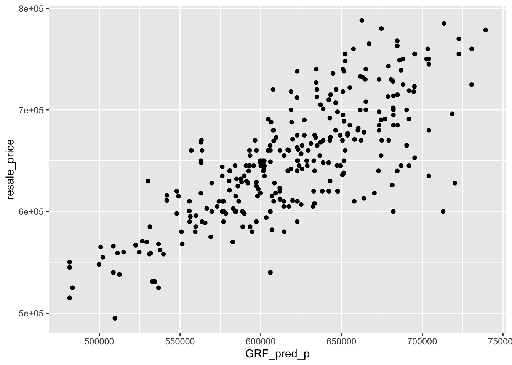

Code Chunk
pacman::p_load(tidyverse, readr, sf, httr, jsonlite, rvest, dplyr, units, lubridate, tmap, ggplot2,ggpubr, beepr, corrplot, spdep, GWmodel, SpatialML, rsample, Metrics)In this take-home exercise, We will calibrate a predictive model to predict HDB resale prices between July-September 2024 by using HDB resale transaction records in 2023.
pacman::p_load(tidyverse, readr, sf, httr, jsonlite, rvest, dplyr, units, lubridate, tmap, ggplot2,ggpubr, beepr, corrplot, spdep, GWmodel, SpatialML, rsample, Metrics)| Package | Function | Explanation |
|---|---|---|
| tidyverse | dplyr::select, dplyr::mutate, ggplot2::ggplot, tibble::tibble |
A collection of R packages for data manipulation (dplyr), data visualization (ggplot2), and reading (readr). tibble is for working with data frames. |
| readr | readr::read_csv, readr::write_csv |
Functions for reading and writing CSV files efficiently. |
| sf | sf::st_as_sf, sf::st_transform, sf::st_drop_geometry, sf::st_is_empty, sf::st_coordinates |
Functions for handling spatial data, including converting data to sf objects, transforming coordinates, and checking for empty geometries. |
| httr | httr::GET, httr::POST |
Functions for making HTTP requests, such as GET and POST, to interact with web APIs. |
| jsonlite | jsonlite::fromJSON, jsonlite::toJSON |
Functions to parse JSON data into R objects and to convert R objects into JSON format. |
| rvest | rvest::read_html, rvest::html_nodes, rvest::html_table |
Used for web scraping, including reading HTML content and extracting elements from web pages. |
| dplyr | dplyr::select, dplyr::mutate, dplyr::filter, dplyr::summarize |
A core package for data manipulation, used for selecting columns, creating new columns, filtering data, and summarizing results. |
| units | units::set_units, units::as_units |
Provides functions for handling and converting physical units in R. |
| lubridate | lubridate::ymd, lubridate::mdy, lubridate::today |
Functions to parse, manipulate, and work with date-time objects in a variety of formats. |
| tmap | tmap::tm_shape, tmap::tm_borders, tmap::tm_fill |
A package for thematic mapping. Functions allow for creating maps with geographic boundaries, fill colors, and more. |
| ggplot2 | ggplot2::ggplot, ggplot2::geom_point, ggplot2::geom_line |
The main visualization package in R, used for creating static graphics such as scatter plots, line charts, histograms, and more. |
| ggpubr | ggpubr::ggarrange, ggpubr::stat_cor |
Enhances ggplot2 by allowing for arranging multiple plots and adding statistical tests, like correlation coefficients, to plots. |
| beepr | beepr::beep |
A simple function to play sounds as notifications, commonly used to alert the user when an operation is complete. |
| corrplot | corrplot::corrplot |
Used to visualize correlation matrices, offering various plotting styles and methods for better presentation of correlations. |
| spdep | spdep::nb2listw, spdep::spautolm |
Provides spatial econometrics tools, such as calculating spatial weights and performing spatial autoregressive models. |
| GWmodel | GWmodel::gwr.basic, GWmodel::grf, GWmodel::bw.gwr |
Functions for geographically weighted regression (GWR), including model fitting (gwr.basic), bandwidth selection, and fitting spatial regression trees. |
| SpatialML | SpatialML::SpatialCV, SpatialML::SpatialML |
Used for machine learning models in spatial contexts, including spatial cross-validation and spatially explicit machine learning techniques. |
| rsample | rsample::initial_split, rsample::training, rsample::testing |
Provides tools for resampling and splitting data into training and testing sets for model validation. |
| Metrics | Metrics::rmse, Metrics::mae, Metrics::mse |
Functions to calculate various performance metrics for model evaluation, including Root Mean Square Error (RMSE), Mean Absolute Error (MAE), and Mean Squared Error (MSE). |
MPSZ: Boundaries of Singapore from ura.gov.sg
Bus Stops: A list of bus stops locally from datamall.lta.gov.sg
Eldercare (SHP): A list of elder care centres locally from data.gov.sg
Hawker Centres (KML): a list of hawker centres from data.gov.sg
Kindergarten (KML) from data.gov.sg
Malls (CSV) from kaggle.com
Train Station (SHP) from datamall.lta.gov.sg
SDCP Park (kml) from data.gov.sg
Schools (CSV) from data.gov.sg
Supermarket (KML) from data.gov.sg
resale2023 <- read_csv("data/rawdata/aspatial/hdb/resale.csv") %>%
filter(month >= "2023-01" & month <= "2024-09")mpsz = st_read(dsn = "data/rawdata/geospatial/mpsz",
layer = "MP14_SUBZONE_NO_SEA_PL")Reading layer `MP14_SUBZONE_NO_SEA_PL' from data source
`/Users/joshuatingsiyuan14/Desktop/isaiahting/ISSS626_GAA/TakeHomeExercise/TakeHome3/data/rawdata/geospatial/mpsz'
using driver `ESRI Shapefile'
Simple feature collection with 323 features and 15 fields
Geometry type: MULTIPOLYGON
Dimension: XY
Bounding box: xmin: 2667.538 ymin: 15748.72 xmax: 56396.44 ymax: 50256.33
Projected CRS: SVY21plot(mpsz)busstop <- st_read(dsn = "data/rawdata/geospatial/busstop",
layer = "BusStop")Reading layer `BusStop' from data source
`/Users/joshuatingsiyuan14/Desktop/isaiahting/ISSS626_GAA/TakeHomeExercise/TakeHome3/data/rawdata/geospatial/busstop'
using driver `ESRI Shapefile'
Simple feature collection with 5166 features and 3 fields
Geometry type: POINT
Dimension: XY
Bounding box: xmin: 3970.122 ymin: 26482.1 xmax: 48285.52 ymax: 52983.82
Projected CRS: SVY21eldercare <- st_read(dsn = "data/rawdata/geospatial/eldercare",
layer = "ELDERCARE")Reading layer `ELDERCARE' from data source
`/Users/joshuatingsiyuan14/Desktop/isaiahting/ISSS626_GAA/TakeHomeExercise/TakeHome3/data/rawdata/geospatial/eldercare'
using driver `ESRI Shapefile'
Simple feature collection with 133 features and 18 fields
Geometry type: POINT
Dimension: XY
Bounding box: xmin: 14481.92 ymin: 28218.43 xmax: 41665.14 ymax: 46804.9
Projected CRS: SVY21hawker <- st_read("data/rawdata/geospatial/hawker/HawkerCentres.kml")Reading layer `HAWKERCENTRE' from data source
`/Users/joshuatingsiyuan14/Desktop/isaiahting/ISSS626_GAA/TakeHomeExercise/TakeHome3/data/rawdata/geospatial/hawker/HawkerCentres.kml'
using driver `KML'
Simple feature collection with 125 features and 2 fields
Geometry type: POINT
Dimension: XYZ
Bounding box: xmin: 103.6974 ymin: 1.272716 xmax: 103.9882 ymax: 1.449017
z_range: zmin: 0 zmax: 0
Geodetic CRS: WGS 84kindergarten <- st_read("data/rawdata/geospatial/kindergarten/Kindergartens.kml")Reading layer `KINDERGARTENS' from data source
`/Users/joshuatingsiyuan14/Desktop/isaiahting/ISSS626_GAA/TakeHomeExercise/TakeHome3/data/rawdata/geospatial/kindergarten/Kindergartens.kml'
using driver `KML'
Simple feature collection with 448 features and 2 fields
Geometry type: POINT
Dimension: XYZ
Bounding box: xmin: 103.6887 ymin: 1.247759 xmax: 103.9717 ymax: 1.455452
z_range: zmin: 0 zmax: 0
Geodetic CRS: WGS 84kindergarten <- st_transform(kindergarten, 3414)mall <- read_csv("data/rawdata/geospatial/mall/shopping_mall_coordinates.csv")mrt <- st_read(dsn = "data/rawdata/geospatial/mrt",
layer = "RapidTransitSystemStation")Reading layer `RapidTransitSystemStation' from data source
`/Users/joshuatingsiyuan14/Desktop/isaiahting/ISSS626_GAA/TakeHomeExercise/TakeHome3/data/rawdata/geospatial/mrt'
using driver `ESRI Shapefile'Simple feature collection with 230 features and 5 fields
Geometry type: POLYGON
Dimension: XY
Bounding box: xmin: 6068.209 ymin: 27478.44 xmax: 45377.5 ymax: 47913.58
Projected CRS: SVY21park <- st_read("data/rawdata/geospatial/park/NParksParksandNatureReservesKML.kml")Reading layer `NPARKS_PARKS' from data source
`/Users/joshuatingsiyuan14/Desktop/isaiahting/ISSS626_GAA/TakeHomeExercise/TakeHome3/data/rawdata/geospatial/park/NParksParksandNatureReservesKML.kml'
using driver `KML'
Simple feature collection with 430 features and 2 fields
Geometry type: MULTIPOLYGON
Dimension: XY, XYZ
Bounding box: xmin: 103.6925 ymin: 1.2115 xmax: 104.0544 ymax: 1.46419
z_range: zmin: 0 zmax: 0
Geodetic CRS: WGS 84school <- read_csv("data/rawdata/geospatial/school/Generalinformationofschools.csv") %>%
mutate(postal_code = as.character(postal_code))supermarket <- st_read("data/rawdata/geospatial/supermarket/SupermarketsKML.kml")Reading layer `SUPERMARKETS' from data source
`/Users/joshuatingsiyuan14/Desktop/isaiahting/ISSS626_GAA/TakeHomeExercise/TakeHome3/data/rawdata/geospatial/supermarket/SupermarketsKML.kml'
using driver `KML'
Simple feature collection with 526 features and 2 fields
Geometry type: POINT
Dimension: XYZ
Bounding box: xmin: 103.6258 ymin: 1.24715 xmax: 104.0036 ymax: 1.461526
z_range: zmin: 0 zmax: 0
Geodetic CRS: WGS 84Ironically, all of these data sets are from Singapore, yet, it presents with varied CRS.
Therefore, in this exercise, SVY21 (EPSG 3414) will be the standardised CRS as all data relates to local context.
In tidying up the HDB resale data, the column block & street_name are combined and remaining_lease are split in two columns for ease of manipulation. Additionally, we are changing the column remaining_lease_yr as an integer and splitting it to month and year.
resale_tidy <- resale2023 %>%
mutate(address = paste(block,street_name)) %>% #combined block & street name
mutate(remaining_lease_yr = as.integer(
str_sub(remaining_lease, 0, 2)))%>% #extract remaining lease by yr
mutate(remaining_lease_mth = as.integer(
str_sub(remaining_lease, 9, 11))) #extract remaining lease by monthresale_selected <- resale_tidy %>%
filter(month >= "2023-01" & month <= "2024-09")add_list <- sort(unique(resale_selected$address)) #parse a list as API cannot read df
#unique reduces records to pass to portal
#sort is used to easier to find geo codesFetching Data from onemap API
As the HDB resale data lack of coordinates, API was used to extract the coordinates.
get_coords <- function(add_list){
# Create a data frame to store all retrieved coordinates
postal_coords <- data.frame()
for (i in add_list){
r <- GET('https://www.onemap.gov.sg/api/common/elastic/search?',
query=list(searchVal=i,
returnGeom='Y',
getAddrDetails='Y'))
data <- fromJSON(rawToChar(r$content))
found <- data$found
res <- data$results
# Create a new data frame for each address
new_row <- data.frame()
# If single result, append
if (found == 1){
postal <- res$POSTAL
lat <- res$LATITUDE
lng <- res$LONGITUDE
new_row <- data.frame(address = i,
postal = postal,
latitude_wgs84 = lat, # renamed to clarify coordinate system
longitude_wgs84 = lng) # renamed to clarify coordinate system
}
# If multiple results, drop NIL and append top 1
else if (found > 1){
# Remove those with NIL as postal
res_sub <- res[res$POSTAL != "NIL", ]
# Set as NA first if no Postal
if (nrow(res_sub) == 0) {
new_row <- data.frame(address = i,
postal = NA,
latitude_wgs84 = NA,
longitude_wgs84 = NA)
}
else{
top1 <- head(res_sub, n = 1)
postal <- top1$POSTAL
lat <- top1$LATITUDE
lng <- top1$LONGITUDE
new_row <- data.frame(address = i,
postal = postal,
latitude_wgs84 = lat,
longitude_wgs84 = lng)
}
}
else {
new_row <- data.frame(address = i,
postal = NA,
latitude_wgs84 = NA,
longitude_wgs84 = NA)
}
# Add the row
postal_coords <- rbind(postal_coords, new_row)
}
# Convert to sf object with WGS84 coordinates (EPSG:4326)
# Filter out rows with NA coordinates first
valid_coords <- postal_coords[!is.na(postal_coords$latitude_wgs84) &
!is.na(postal_coords$longitude_wgs84), ]
if(nrow(valid_coords) > 0) {
coords_sf <- st_as_sf(valid_coords,
coords = c("longitude_wgs84", "latitude_wgs84"),
crs = 4326)
# Transform to SVY21 (EPSG:3414)
coords_svy21 <- st_transform(coords_sf, 3414)
# Extract coordinates
coords_matrix <- st_coordinates(coords_svy21)
# Add SVY21 coordinates back to the original dataframe with desired column names
valid_coords$longitude <- coords_matrix[, 1] # SVY21 X coordinate as longitude
valid_coords$latitude <- coords_matrix[, 2] # SVY21 Y coordinate as latitude
# Merge back with rows that had NA coordinates
result <- merge(postal_coords, valid_coords[c("address", "longitude", "latitude")],
by = "address", all.x = TRUE)
} else {
# If no valid coordinates, add empty SVY21 columns
result <- postal_coords
result$longitude <- NA # SVY21 coordinates
result$latitude <- NA # SVY21 coordinates
}
return(result)
}Below is the code chunk that populates the coordinates in longitude, latitude and postal code against the address in the add_list.
coords <- get_coords(add_list)The longtitude and latitude is then combined into geometry and the crs has been set to EPSG = 3414.
coords_sf <- coords %>%
st_as_sf(coords = c("longitude", "latitude"), crs = 3414, remove = FALSE) %>%
select(address, postal, longitude, latitude, geometry)Following which, the coords_sf is then combined to the resale_selected df by address, forming a new df resale_geom
resale_geom <- resale_selected %>%
left_join(coords_sf, by = "address")Assigning CRS EPSG 3414 to resale_geom
resale_geom <- resale_geom %>%
st_as_sf(coords =c("longitude", "latitude"), crs = 3414, remove = FALSE)Using st_crs() to check if it is the correct CRS.
st_crs(resale_geom)Coordinate Reference System:
User input: EPSG:3414
wkt:
PROJCRS["SVY21 / Singapore TM",
BASEGEOGCRS["SVY21",
DATUM["SVY21",
ELLIPSOID["WGS 84",6378137,298.257223563,
LENGTHUNIT["metre",1]]],
PRIMEM["Greenwich",0,
ANGLEUNIT["degree",0.0174532925199433]],
ID["EPSG",4757]],
CONVERSION["Singapore Transverse Mercator",
METHOD["Transverse Mercator",
ID["EPSG",9807]],
PARAMETER["Latitude of natural origin",1.36666666666667,
ANGLEUNIT["degree",0.0174532925199433],
ID["EPSG",8801]],
PARAMETER["Longitude of natural origin",103.833333333333,
ANGLEUNIT["degree",0.0174532925199433],
ID["EPSG",8802]],
PARAMETER["Scale factor at natural origin",1,
SCALEUNIT["unity",1],
ID["EPSG",8805]],
PARAMETER["False easting",28001.642,
LENGTHUNIT["metre",1],
ID["EPSG",8806]],
PARAMETER["False northing",38744.572,
LENGTHUNIT["metre",1],
ID["EPSG",8807]]],
CS[Cartesian,2],
AXIS["northing (N)",north,
ORDER[1],
LENGTHUNIT["metre",1]],
AXIS["easting (E)",east,
ORDER[2],
LENGTHUNIT["metre",1]],
USAGE[
SCOPE["Cadastre, engineering survey, topographic mapping."],
AREA["Singapore - onshore and offshore."],
BBOX[1.13,103.59,1.47,104.07]],
ID["EPSG",3414]]In ensuring these are the variables we need, we use select() to include the variables. Then, we compute the unit age with the formula of 99 year (convention HDB lease years) - remaining lease year. Lastly, we change the column month to POSICxt so we can manipulate in ease later on.
resale_geom <- resale_geom %>%
select(address, town, resale_price, month, flat_type, floor_area_sqm, remaining_lease_yr,longitude, latitude, geometry) %>%
mutate(unit_age = 99 - remaining_lease_yr)| WGS 84 | SVY21 | No PCS / CSV |
|---|---|---|
| Hawker | Bus Stop | HDB Resale |
| Kindergarten | Eldercare | Mall |
| Park | MRT | School |
| Supermarket | ||
Coordinate System
Viewing the sf, we noticed that the coordinates are in WGS84 - EPSG 4326. This may not be suitable for our data manipulation later on as we are standardising it to our local coordinates system which is SVY 21 EPSG 3414.
Overview of Coordinate System
WGS84 (EPSG: 4326) - Global Use
Definition: WGS84 (World Geodetic System 1984) is a global coordinate system that defines latitude and longitude on a three-dimensional ellipsoid. It is the standard used by the Global Positioning System (GPS).
Coordinate System: It uses a geographic coordinate system based on a spheroid, where coordinates are given in degrees (latitude and longitude).
Application: WGS84 is used globally for mapping, navigation, and geolocation applications. It provides a standard reference for geographic information systems (GIS) and is essential for interoperability between different systems.
Units: The coordinates are expressed in degrees.
SVY21 (EPSG: 3413) - Singapore Use
Definition: SVY21 (Singapore Vertical 21) is a national coordinate system specifically designed for Singapore. It is based on the Transverse Mercator projection and is tailored to provide accurate measurements within Singapores geographic boundaries.
Coordinate System: SVY21 uses a projected coordinate system, where coordinates are given in meters. The system is more suitable for local applications because it minimizes distortions in a specific area.
Application: SVY21 is primarily used for urban planning, construction, and various governmental applications within Singapore. It provides higher accuracy for local measurements compared to global systems like WGS84.
Units: The coordinates are expressed in meters.
First, we would like to check if there is any shared boudaries in this sf as this will churned as invalid polygons in the data. We will then noticed that there are several Ring Self-Intersection specifically, there are 9 polygons with self-intersection issues which is not good for the data.
st_is_valid(mpsz, reason = TRUE) [1] "Valid Geometry"
[2] "Valid Geometry"
[3] "Valid Geometry"
[4] "Valid Geometry"
[5] "Valid Geometry"
[6] "Valid Geometry"
[7] "Valid Geometry"
[8] "Valid Geometry"
[9] "Valid Geometry"
[10] "Valid Geometry"
[11] "Valid Geometry"
[12] "Valid Geometry"
[13] "Valid Geometry"
[14] "Valid Geometry"
[15] "Valid Geometry"
[16] "Valid Geometry"
[17] "Valid Geometry"
[18] "Valid Geometry"
[19] "Valid Geometry"
[20] "Valid Geometry"
[21] "Valid Geometry"
[22] "Valid Geometry"
[23] "Valid Geometry"
[24] "Valid Geometry"
[25] "Valid Geometry"
[26] "Valid Geometry"
[27] "Valid Geometry"
[28] "Valid Geometry"
[29] "Valid Geometry"
[30] "Valid Geometry"
[31] "Valid Geometry"
[32] "Valid Geometry"
[33] "Valid Geometry"
[34] "Valid Geometry"
[35] "Valid Geometry"
[36] "Valid Geometry"
[37] "Valid Geometry"
[38] "Ring Self-intersection[27932.3925999999 21982.7971999999]"
[39] "Ring Self-intersection[26885.4439000003 26668.3121000007]"
[40] "Valid Geometry"
[41] "Valid Geometry"
[42] "Valid Geometry"
[43] "Ring Self-intersection[26920.1689999998 26978.5440999996]"
[44] "Valid Geometry"
[45] "Valid Geometry"
[46] "Valid Geometry"
[47] "Valid Geometry"
[48] "Valid Geometry"
[49] "Valid Geometry"
[50] "Valid Geometry"
[51] "Valid Geometry"
[52] "Valid Geometry"
[53] "Valid Geometry"
[54] "Valid Geometry"
[55] "Valid Geometry"
[56] "Valid Geometry"
[57] "Valid Geometry"
[58] "Valid Geometry"
[59] "Valid Geometry"
[60] "Valid Geometry"
[61] "Valid Geometry"
[62] "Valid Geometry"
[63] "Valid Geometry"
[64] "Valid Geometry"
[65] "Valid Geometry"
[66] "Valid Geometry"
[67] "Valid Geometry"
[68] "Valid Geometry"
[69] "Valid Geometry"
[70] "Valid Geometry"
[71] "Valid Geometry"
[72] "Valid Geometry"
[73] "Valid Geometry"
[74] "Valid Geometry"
[75] "Valid Geometry"
[76] "Valid Geometry"
[77] "Valid Geometry"
[78] "Valid Geometry"
[79] "Valid Geometry"
[80] "Valid Geometry"
[81] "Valid Geometry"
[82] "Valid Geometry"
[83] "Valid Geometry"
[84] "Valid Geometry"
[85] "Valid Geometry"
[86] "Valid Geometry"
[87] "Valid Geometry"
[88] "Valid Geometry"
[89] "Valid Geometry"
[90] "Valid Geometry"
[91] "Valid Geometry"
[92] "Valid Geometry"
[93] "Valid Geometry"
[94] "Valid Geometry"
[95] "Valid Geometry"
[96] "Valid Geometry"
[97] "Ring Self-intersection[14484.6859999998 31330.1319999993]"
[98] "Ring Self-intersection[12861.3828999996 32207.4923]"
[99] "Valid Geometry"
[100] "Valid Geometry"
[101] "Valid Geometry"
[102] "Valid Geometry"
[103] "Ring Self-intersection[19681.2353999997 31294.4521999992]"
[104] "Valid Geometry"
[105] "Valid Geometry"
[106] "Valid Geometry"
[107] "Valid Geometry"
[108] "Valid Geometry"
[109] "Valid Geometry"
[110] "Valid Geometry"
[111] "Valid Geometry"
[112] "Valid Geometry"
[113] "Valid Geometry"
[114] "Valid Geometry"
[115] "Valid Geometry"
[116] "Valid Geometry"
[117] "Valid Geometry"
[118] "Valid Geometry"
[119] "Valid Geometry"
[120] "Valid Geometry"
[121] "Valid Geometry"
[122] "Valid Geometry"
[123] "Valid Geometry"
[124] "Valid Geometry"
[125] "Valid Geometry"
[126] "Valid Geometry"
[127] "Valid Geometry"
[128] "Valid Geometry"
[129] "Valid Geometry"
[130] "Valid Geometry"
[131] "Valid Geometry"
[132] "Valid Geometry"
[133] "Valid Geometry"
[134] "Valid Geometry"
[135] "Valid Geometry"
[136] "Valid Geometry"
[137] "Valid Geometry"
[138] "Valid Geometry"
[139] "Valid Geometry"
[140] "Valid Geometry"
[141] "Valid Geometry"
[142] "Valid Geometry"
[143] "Valid Geometry"
[144] "Valid Geometry"
[145] "Valid Geometry"
[146] "Valid Geometry"
[147] "Valid Geometry"
[148] "Valid Geometry"
[149] "Valid Geometry"
[150] "Valid Geometry"
[151] "Valid Geometry"
[152] "Valid Geometry"
[153] "Valid Geometry"
[154] "Valid Geometry"
[155] "Valid Geometry"
[156] "Valid Geometry"
[157] "Valid Geometry"
[158] "Valid Geometry"
[159] "Valid Geometry"
[160] "Valid Geometry"
[161] "Valid Geometry"
[162] "Valid Geometry"
[163] "Valid Geometry"
[164] "Valid Geometry"
[165] "Valid Geometry"
[166] "Valid Geometry"
[167] "Valid Geometry"
[168] "Valid Geometry"
[169] "Valid Geometry"
[170] "Valid Geometry"
[171] "Valid Geometry"
[172] "Valid Geometry"
[173] "Valid Geometry"
[174] "Valid Geometry"
[175] "Valid Geometry"
[176] "Valid Geometry"
[177] "Valid Geometry"
[178] "Valid Geometry"
[179] "Valid Geometry"
[180] "Valid Geometry"
[181] "Valid Geometry"
[182] "Valid Geometry"
[183] "Valid Geometry"
[184] "Valid Geometry"
[185] "Valid Geometry"
[186] "Valid Geometry"
[187] "Valid Geometry"
[188] "Valid Geometry"
[189] "Valid Geometry"
[190] "Valid Geometry"
[191] "Valid Geometry"
[192] "Valid Geometry"
[193] "Valid Geometry"
[194] "Valid Geometry"
[195] "Valid Geometry"
[196] "Valid Geometry"
[197] "Valid Geometry"
[198] "Valid Geometry"
[199] "Valid Geometry"
[200] "Valid Geometry"
[201] "Valid Geometry"
[202] "Valid Geometry"
[203] "Valid Geometry"
[204] "Valid Geometry"
[205] "Valid Geometry"
[206] "Valid Geometry"
[207] "Valid Geometry"
[208] "Valid Geometry"
[209] "Valid Geometry"
[210] "Valid Geometry"
[211] "Valid Geometry"
[212] "Valid Geometry"
[213] "Valid Geometry"
[214] "Valid Geometry"
[215] "Valid Geometry"
[216] "Valid Geometry"
[217] "Valid Geometry"
[218] "Valid Geometry"
[219] "Valid Geometry"
[220] "Valid Geometry"
[221] "Valid Geometry"
[222] "Valid Geometry"
[223] "Valid Geometry"
[224] "Valid Geometry"
[225] "Valid Geometry"
[226] "Valid Geometry"
[227] "Valid Geometry"
[228] "Valid Geometry"
[229] "Valid Geometry"
[230] "Valid Geometry"
[231] "Valid Geometry"
[232] "Valid Geometry"
[233] "Valid Geometry"
[234] "Valid Geometry"
[235] "Valid Geometry"
[236] "Valid Geometry"
[237] "Valid Geometry"
[238] "Valid Geometry"
[239] "Valid Geometry"
[240] "Valid Geometry"
[241] "Valid Geometry"
[242] "Valid Geometry"
[243] "Valid Geometry"
[244] "Valid Geometry"
[245] "Valid Geometry"
[246] "Valid Geometry"
[247] "Valid Geometry"
[248] "Valid Geometry"
[249] "Valid Geometry"
[250] "Valid Geometry"
[251] "Valid Geometry"
[252] "Valid Geometry"
[253] "Valid Geometry"
[254] "Valid Geometry"
[255] "Valid Geometry"
[256] "Valid Geometry"
[257] "Valid Geometry"
[258] "Valid Geometry"
[259] "Valid Geometry"
[260] "Valid Geometry"
[261] "Valid Geometry"
[262] "Valid Geometry"
[263] "Valid Geometry"
[264] "Valid Geometry"
[265] "Valid Geometry"
[266] "Valid Geometry"
[267] "Valid Geometry"
[268] "Valid Geometry"
[269] "Valid Geometry"
[270] "Valid Geometry"
[271] "Valid Geometry"
[272] "Valid Geometry"
[273] "Valid Geometry"
[274] "Valid Geometry"
[275] "Valid Geometry"
[276] "Ring Self-intersection[38542.2260999996 44605.4089000002]"
[277] "Valid Geometry"
[278] "Valid Geometry"
[279] "Valid Geometry"
[280] "Valid Geometry"
[281] "Valid Geometry"
[282] "Valid Geometry"
[283] "Valid Geometry"
[284] "Valid Geometry"
[285] "Valid Geometry"
[286] "Valid Geometry"
[287] "Valid Geometry"
[288] "Valid Geometry"
[289] "Valid Geometry"
[290] "Ring Self-intersection[41375.108 40432.8588999994]"
[291] "Valid Geometry"
[292] "Valid Geometry"
[293] "Valid Geometry"
[294] "Valid Geometry"
[295] "Valid Geometry"
[296] "Valid Geometry"
[297] "Valid Geometry"
[298] "Valid Geometry"
[299] "Valid Geometry"
[300] "Valid Geometry"
[301] "Valid Geometry"
[302] "Valid Geometry"
[303] "Valid Geometry"
[304] "Valid Geometry"
[305] "Valid Geometry"
[306] "Valid Geometry"
[307] "Valid Geometry"
[308] "Valid Geometry"
[309] "Valid Geometry"
[310] "Valid Geometry"
[311] "Valid Geometry"
[312] "Valid Geometry"
[313] "Valid Geometry"
[314] "Valid Geometry"
[315] "Valid Geometry"
[316] "Valid Geometry"
[317] "Valid Geometry"
[318] "Valid Geometry"
[319] "Valid Geometry"
[320] "Valid Geometry"
[321] "Valid Geometry"
[322] "Ring Self-intersection[21702.5623000003 48125.1154999994]"
[323] "Valid Geometry" The below code chunk visualises the invalid geometries.
invalid_polygons <- mpsz[!st_is_valid(mpsz),]
plot(invalid_polygons)In addressing the above point, we will use st_buffer() of sf package to compute a 5-metres buffers around the data.
mpsz <- st_buffer(mpsz, dist = 2)In inspecting the sf, we noticed that when we sort the column BUS_STOP_N, there are two rows that retains the geometry however there are nil indication of the bus stop number and location. Hence both of the rows will be deleted.
Additionally, in checking for duplicates through its geometry, we noticed two rows share the geometry. One is named as YUSEN LOGISTICS while the other is yusen logistics
# Check for duplicate geometries in the eldercare sf object
duplicate_busstop <- busstop[duplicated(busstop$geometry), ]
# Display the duplicate geometries if any
if (nrow(duplicate_busstop) > 0) {
print(duplicate_busstop)
} else {
print("No duplicate geometries found.")
}Simple feature collection with 1 feature and 3 fields
Geometry type: POINT
Dimension: XY
Bounding box: xmin: 42187.23 ymin: 34995.78 xmax: 42187.23 ymax: 34995.78
Projected CRS: SVY21
BUS_STOP_N BUS_ROOF_N LOC_DESC geometry
3195 96319 NIL YUSEN LOGISTICS POINT (42187.23 34995.78)Hence, with the above adjustments and extracting coordinates, the data is cleaned.
busstop_cleaned <- busstop %>%
filter(LOC_DESC != "YUSEN LOGISTICS") # Delete the specified row# Extract coordinates after filtering
coordinates <- st_coordinates(busstop_cleaned)
# Add longitude and latitude columns
busstop_cleaned <- busstop_cleaned %>%
mutate(longitude = coordinates[, 1], # First column is longitude
latitude = coordinates[, 2]) %>%
select(LOC_DESC, longitude, latitude, geometry) st_crs(busstop_cleaned) <- 3414In ensuring there are no duplicates the below code chunk was churned. However,we noticed that there is two rows that shares the same geometry. Through closer inspection, we realised that both addresses are formatted differently 117 Bukit Merah View & Blk 117 Bukit Merah View #01-205. Thus, one of the row will be deleted.
# Check for duplicate geometries in the eldercare sf object
duplicate_geometries <- eldercare[duplicated(eldercare$geometry), ]
# Display the duplicate geometries if any
if (nrow(duplicate_geometries) > 0) {
print(duplicate_geometries)
} else {
print("No duplicate geometries found.")
}Simple feature collection with 13 features and 18 fields
Geometry type: POINT
Dimension: XY
Bounding box: xmin: 23147.94 ymin: 29642.15 xmax: 41665.14 ymax: 45761.17
Projected CRS: SVY21
First 10 features:
OBJECTID ADDRESSBLO ADDRESSBUI ADDRESSPOS
51 51 <NA> <NA> 190005
59 59 <NA> <NA> 190008
62 62 <NA> <NA> 731569
65 65 <NA> <NA> 540182
66 66 <NA> <NA> 523499
70 70 <NA> <NA> 151117
97 97 <NA> <NA> 560123
102 102 <NA> <NA> 312062
106 106 <NA> <NA> 560469
114 114 <NA> <NA> 151117
ADDRESSSTR ADDRESSTYP DESCRIPTIO HYPERLINK
51 5 Beach Rd #02-4915 <NA> <NA> <NA>
59 Blk 8 North Bridge Rd <NA> <NA> <NA>
62 Blk 569A Champions Way <NA> <NA> <NA>
65 Blk 182 Rivervale Crescent <NA> <NA> <NA>
66 Blk 499C Tampines Ave 9 <NA> <NA> <NA>
70 117 Bukit Merah View <NA> <NA> <NA>
97 Blk 123 Ang Mo Kio Avenue 6 #01-4011 <NA> <NA> <NA>
102 62B Lorong 4 Toa Payoh #02-121 <NA> <NA> <NA>
106 Blk 469 Ang Mo Kio Avenue 10 #01-940 <NA> <NA> <NA>
114 Blk 117 Bukit Merah View #01-205 <NA> <NA> <NA>
LANDXADDRE LANDYADDRE NAME
51 0 0 Peace-Connect Cluster Operator
59 0 0 PEACE-Connect Senior Group Home@8
62 0 0 Care Corner SGH @ WL569A
65 0 0 COMNET Senior Group Home @ Rivervale Crescent
66 0 0 Lions Befrienders Senior Group Home @ Tampines 499C
70 0 0 NTUC Health Senior Group Home @ Henderson
97 0 0 AWWA Senior Activity Centre
102 0 0 Care Corner Senior Activity Centre (TP62B)
106 0 0 Teck Ghee Senior Activity Centre Branch @ Blk 469
114 0 0 Henderson Senior Activity Centre
PHOTOURL ADDRESSFLO INC_CRC FMEL_UPD_D ADDRESSUNI X_ADDR
51 <NA> <NA> A2C058FC1751FFE7 2016-07-28 <NA> 31505.35
59 <NA> <NA> D1A1515DCC76C221 2016-07-28 <NA> 31415.01
62 <NA> <NA> 4DC6800EF15E4B70 2016-07-28 <NA> 23147.94
65 <NA> <NA> 6BB0D76986F8C512 2016-07-28 <NA> 36446.37
66 <NA> <NA> 5DB6B9F0F16BCA80 2016-07-28 <NA> 41665.14
70 <NA> <NA> 7FF38742987329FE 2016-07-28 <NA> 26715.04
97 <NA> <NA> B275FB9D13DD7091 2016-07-28 <NA> 29261.31
102 <NA> <NA> 13908BA85D11F6DC 2016-07-28 <NA> 29998.73
106 <NA> <NA> 8F9B74A5A73579D9 2016-07-28 <NA> 30594.50
114 <NA> <NA> 7FF387421A0883F4 2016-07-28 <NA> 26715.04
Y_ADDR geometry
51 31853.52 POINT (31505.35 31853.52)
59 31880.06 POINT (31415.01 31880.06)
62 45761.17 POINT (23147.94 45761.17)
65 41376.90 POINT (36446.37 41376.9)
66 37956.92 POINT (41665.14 37956.92)
70 29642.15 POINT (26715.04 29642.15)
97 39169.61 POINT (29261.31 39169.61)
102 35335.92 POINT (29998.73 35335.92)
106 38507.25 POINT (30594.5 38507.25)
114 29642.15 POINT (26715.04 29642.15)The code below selects the necessary variables of ease of manipulation
eldercare_cleaned <- eldercare %>%
filter(INC_CRC != "7FF38742987329FE") %>% #deletes the duplicated row
rename(longitude = X_ADDR) %>%
rename(latitude = Y_ADDR) %>%
select(NAME, longitude, latitude, geometry)st_crs(eldercare_cleaned) <- 3414The code chunk below checks if there are any duplicates geometries and it returns nil.
duplicate_geometries <- hawker[duplicated(st_geometry(hawker)), ]
# Display duplicate geometries if any
if (nrow(duplicate_geometries) > 0) {
print(duplicate_geometries)
} else {
print("No duplicate geometries found.")
}[1] "No duplicate geometries found."As the CRS of hawker sf is in WGS84, st_transform() is then used to transform it to SVY21.
hawker <- st_transform(hawker, 3414)The data is then split into longitude and latitude and selected columns were chosen.
coordinates <- st_coordinates(hawker)
hawker_cleaned <- hawker %>%
mutate(longitude = coordinates[, 1], # First column is longitude
latitude = coordinates[, 2]) %>%
select(longitude, latitude, geometry)The code chunk below checks if there are any duplicates geometries and it returns nil.
duplicate_kindergarten <- kindergarten[duplicated(st_geometry(kindergarten)), ]
# Display duplicate geometries if any
if (nrow(duplicate_kindergarten) > 0) {
print(duplicate_kindergarten)
} else {
print("No duplicate geometries found.")
}Simple feature collection with 66 features and 2 fields
Geometry type: POINT
Dimension: XYZ
Bounding box: xmin: 12882.62 ymin: 25596.33 xmax: 41916.49 ymax: 48384.34
z_range: zmin: 0 zmax: 0
Projected CRS: SVY21 / Singapore TM
First 10 features:
Name
271 kml_271
284 kml_284
288 kml_288
291 kml_291
349 kml_349
354 kml_354
355 kml_355
356 kml_356
358 kml_358
360 kml_360
Description
271 <center><table><tr><th colspan='2' align='center'><em>Attributes</em></th></tr><tr bgcolor="#E3E3F3"> <th>ADDRESSBLOCKHOUSENUMBER</th> <td></td> </tr><tr bgcolor=""> <th>ADDRESSBUILDINGNAME</th> <td></td> </tr><tr bgcolor="#E3E3F3"> <th>ADDRESSFLOORNUMBER</th> <td></td> </tr><tr bgcolor=""> <th>ADDRESSPOSTALCODE</th> <td>423731</td> </tr><tr bgcolor="#E3E3F3"> <th>ADDRESSSTREETNAME</th> <td>252 Tembeling Road #02-07 S(423731)</td> </tr><tr bgcolor=""> <th>ADDRESSTYPE</th> <td></td> </tr><tr bgcolor="#E3E3F3"> <th>DESCRIPTION</th> <td>Kindergartens</td> </tr><tr bgcolor=""> <th>HYPERLINK</th> <td></td> </tr><tr bgcolor="#E3E3F3"> <th>LANDXADDRESSPOINT</th> <td></td> </tr><tr bgcolor=""> <th>LANDYADDRESSPOINT</th> <td></td> </tr><tr bgcolor="#E3E3F3"> <th>NAME</th> <td>Seeds D' Learning House</td> </tr><tr bgcolor=""> <th>PHOTOURL</th> <td></td> </tr><tr bgcolor="#E3E3F3"> <th>INC_CRC</th> <td>30BE9FB7740C8654</td> </tr><tr bgcolor=""> <th>FMEL_UPD_D</th> <td>20211201143423</td> </tr><tr bgcolor="#E3E3F3"> <th>ADDRESSUNITNUMBER</th> <td></td> </tr></table></center>
284 <center><table><tr><th colspan='2' align='center'><em>Attributes</em></th></tr><tr bgcolor="#E3E3F3"> <th>ADDRESSBLOCKHOUSENUMBER</th> <td></td> </tr><tr bgcolor=""> <th>ADDRESSBUILDINGNAME</th> <td></td> </tr><tr bgcolor="#E3E3F3"> <th>ADDRESSFLOORNUMBER</th> <td></td> </tr><tr bgcolor=""> <th>ADDRESSPOSTALCODE</th> <td>287994</td> </tr><tr bgcolor="#E3E3F3"> <th>ADDRESSSTREETNAME</th> <td>200 Turf Club Road S(287994)</td> </tr><tr bgcolor=""> <th>ADDRESSTYPE</th> <td></td> </tr><tr bgcolor="#E3E3F3"> <th>DESCRIPTION</th> <td>Kindergartens</td> </tr><tr bgcolor=""> <th>HYPERLINK</th> <td></td> </tr><tr bgcolor="#E3E3F3"> <th>LANDXADDRESSPOINT</th> <td></td> </tr><tr bgcolor=""> <th>LANDYADDRESSPOINT</th> <td></td> </tr><tr bgcolor="#E3E3F3"> <th>NAME</th> <td>Swallows And Amazons Kindergarten</td> </tr><tr bgcolor=""> <th>PHOTOURL</th> <td></td> </tr><tr bgcolor="#E3E3F3"> <th>INC_CRC</th> <td>AC4EDF1099057112</td> </tr><tr bgcolor=""> <th>FMEL_UPD_D</th> <td>20211201143423</td> </tr><tr bgcolor="#E3E3F3"> <th>ADDRESSUNITNUMBER</th> <td></td> </tr></table></center>
288 <center><table><tr><th colspan='2' align='center'><em>Attributes</em></th></tr><tr bgcolor="#E3E3F3"> <th>ADDRESSBLOCKHOUSENUMBER</th> <td></td> </tr><tr bgcolor=""> <th>ADDRESSBUILDINGNAME</th> <td></td> </tr><tr bgcolor="#E3E3F3"> <th>ADDRESSFLOORNUMBER</th> <td></td> </tr><tr bgcolor=""> <th>ADDRESSPOSTALCODE</th> <td>287994</td> </tr><tr bgcolor="#E3E3F3"> <th>ADDRESSSTREETNAME</th> <td>200, TURF CLUB ROAD, #06-08,THE GRANDSTAND, (S)287994</td> </tr><tr bgcolor=""> <th>ADDRESSTYPE</th> <td></td> </tr><tr bgcolor="#E3E3F3"> <th>DESCRIPTION</th> <td>Kindergartens</td> </tr><tr bgcolor=""> <th>HYPERLINK</th> <td></td> </tr><tr bgcolor="#E3E3F3"> <th>LANDXADDRESSPOINT</th> <td></td> </tr><tr bgcolor=""> <th>LANDYADDRESSPOINT</th> <td></td> </tr><tr bgcolor="#E3E3F3"> <th>NAME</th> <td>The Little House (Montessori) Kindergarten</td> </tr><tr bgcolor=""> <th>PHOTOURL</th> <td></td> </tr><tr bgcolor="#E3E3F3"> <th>INC_CRC</th> <td>AC4EDF101AAB7C05</td> </tr><tr bgcolor=""> <th>FMEL_UPD_D</th> <td>20211201143423</td> </tr><tr bgcolor="#E3E3F3"> <th>ADDRESSUNITNUMBER</th> <td></td> </tr></table></center>
291 <center><table><tr><th colspan='2' align='center'><em>Attributes</em></th></tr><tr bgcolor="#E3E3F3"> <th>ADDRESSBLOCKHOUSENUMBER</th> <td></td> </tr><tr bgcolor=""> <th>ADDRESSBUILDINGNAME</th> <td></td> </tr><tr bgcolor="#E3E3F3"> <th>ADDRESSFLOORNUMBER</th> <td></td> </tr><tr bgcolor=""> <th>ADDRESSPOSTALCODE</th> <td>760102</td> </tr><tr bgcolor="#E3E3F3"> <th>ADDRESSSTREETNAME</th> <td>102 Yishun Avenue 5 #03-115 S(760102)</td> </tr><tr bgcolor=""> <th>ADDRESSTYPE</th> <td></td> </tr><tr bgcolor="#E3E3F3"> <th>DESCRIPTION</th> <td>Kindergartens</td> </tr><tr bgcolor=""> <th>HYPERLINK</th> <td></td> </tr><tr bgcolor="#E3E3F3"> <th>LANDXADDRESSPOINT</th> <td></td> </tr><tr bgcolor=""> <th>LANDYADDRESSPOINT</th> <td></td> </tr><tr bgcolor="#E3E3F3"> <th>NAME</th> <td>Tots Town Preschool @ Yishun</td> </tr><tr bgcolor=""> <th>PHOTOURL</th> <td></td> </tr><tr bgcolor="#E3E3F3"> <th>INC_CRC</th> <td>0CEB47AFBABB448C</td> </tr><tr bgcolor=""> <th>FMEL_UPD_D</th> <td>20211201143423</td> </tr><tr bgcolor="#E3E3F3"> <th>ADDRESSUNITNUMBER</th> <td></td> </tr></table></center>
349 <center><table><tr><th colspan='2' align='center'><em>Attributes</em></th></tr><tr bgcolor="#E3E3F3"> <th>ADDRESSBLOCKHOUSENUMBER</th> <td></td> </tr><tr bgcolor=""> <th>ADDRESSBUILDINGNAME</th> <td></td> </tr><tr bgcolor="#E3E3F3"> <th>ADDRESSFLOORNUMBER</th> <td></td> </tr><tr bgcolor=""> <th>ADDRESSPOSTALCODE</th> <td>579792</td> </tr><tr bgcolor="#E3E3F3"> <th>ADDRESSSTREETNAME</th> <td>4 Bishan Street 13 S(579792)</td> </tr><tr bgcolor=""> <th>ADDRESSTYPE</th> <td></td> </tr><tr bgcolor="#E3E3F3"> <th>DESCRIPTION</th> <td>Kindergartens</td> </tr><tr bgcolor=""> <th>HYPERLINK</th> <td></td> </tr><tr bgcolor="#E3E3F3"> <th>LANDXADDRESSPOINT</th> <td></td> </tr><tr bgcolor=""> <th>LANDYADDRESSPOINT</th> <td></td> </tr><tr bgcolor="#E3E3F3"> <th>NAME</th> <td>Zion Bishan Kindergarten</td> </tr><tr bgcolor=""> <th>PHOTOURL</th> <td></td> </tr><tr bgcolor="#E3E3F3"> <th>INC_CRC</th> <td>2809ADC0B5232EF6</td> </tr><tr bgcolor=""> <th>FMEL_UPD_D</th> <td>20211201143423</td> </tr><tr bgcolor="#E3E3F3"> <th>ADDRESSUNITNUMBER</th> <td></td> </tr></table></center>
354 <center><table><tr><th colspan='2' align='center'><em>Attributes</em></th></tr><tr bgcolor="#E3E3F3"> <th>ADDRESSBLOCKHOUSENUMBER</th> <td></td> </tr><tr bgcolor=""> <th>ADDRESSBUILDINGNAME</th> <td></td> </tr><tr bgcolor="#E3E3F3"> <th>ADDRESSFLOORNUMBER</th> <td></td> </tr><tr bgcolor=""> <th>ADDRESSPOSTALCODE</th> <td>519420</td> </tr><tr bgcolor="#E3E3F3"> <th>ADDRESSSTREETNAME</th> <td>4 Pasir Ris Drive 6</td> </tr><tr bgcolor=""> <th>ADDRESSTYPE</th> <td></td> </tr><tr bgcolor="#E3E3F3"> <th>DESCRIPTION</th> <td>Kindergartens</td> </tr><tr bgcolor=""> <th>HYPERLINK</th> <td></td> </tr><tr bgcolor="#E3E3F3"> <th>LANDXADDRESSPOINT</th> <td></td> </tr><tr bgcolor=""> <th>LANDYADDRESSPOINT</th> <td></td> </tr><tr bgcolor="#E3E3F3"> <th>NAME</th> <td>Pentecost Methodist Church Kindergarten</td> </tr><tr bgcolor=""> <th>PHOTOURL</th> <td></td> </tr><tr bgcolor="#E3E3F3"> <th>INC_CRC</th> <td>8C80D608E5D43802</td> </tr><tr bgcolor=""> <th>FMEL_UPD_D</th> <td>20211201143423</td> </tr><tr bgcolor="#E3E3F3"> <th>ADDRESSUNITNUMBER</th> <td></td> </tr></table></center>
355 <center><table><tr><th colspan='2' align='center'><em>Attributes</em></th></tr><tr bgcolor="#E3E3F3"> <th>ADDRESSBLOCKHOUSENUMBER</th> <td></td> </tr><tr bgcolor=""> <th>ADDRESSBUILDINGNAME</th> <td></td> </tr><tr bgcolor="#E3E3F3"> <th>ADDRESSFLOORNUMBER</th> <td></td> </tr><tr bgcolor=""> <th>ADDRESSPOSTALCODE</th> <td>299574</td> </tr><tr bgcolor="#E3E3F3"> <th>ADDRESSSTREETNAME</th> <td>1 Dunearn Close</td> </tr><tr bgcolor=""> <th>ADDRESSTYPE</th> <td></td> </tr><tr bgcolor="#E3E3F3"> <th>DESCRIPTION</th> <td>Kindergartens</td> </tr><tr bgcolor=""> <th>HYPERLINK</th> <td></td> </tr><tr bgcolor="#E3E3F3"> <th>LANDXADDRESSPOINT</th> <td></td> </tr><tr bgcolor=""> <th>LANDYADDRESSPOINT</th> <td></td> </tr><tr bgcolor="#E3E3F3"> <th>NAME</th> <td>Pibos Garden Preschool</td> </tr><tr bgcolor=""> <th>PHOTOURL</th> <td></td> </tr><tr bgcolor="#E3E3F3"> <th>INC_CRC</th> <td>7F8CBC68533FFB92</td> </tr><tr bgcolor=""> <th>FMEL_UPD_D</th> <td>20211201143423</td> </tr><tr bgcolor="#E3E3F3"> <th>ADDRESSUNITNUMBER</th> <td></td> </tr></table></center>
356 <center><table><tr><th colspan='2' align='center'><em>Attributes</em></th></tr><tr bgcolor="#E3E3F3"> <th>ADDRESSBLOCKHOUSENUMBER</th> <td></td> </tr><tr bgcolor=""> <th>ADDRESSBUILDINGNAME</th> <td></td> </tr><tr bgcolor="#E3E3F3"> <th>ADDRESSFLOORNUMBER</th> <td></td> </tr><tr bgcolor=""> <th>ADDRESSPOSTALCODE</th> <td>423731</td> </tr><tr bgcolor="#E3E3F3"> <th>ADDRESSSTREETNAME</th> <td>252 Tembeling Road #01-07</td> </tr><tr bgcolor=""> <th>ADDRESSTYPE</th> <td></td> </tr><tr bgcolor="#E3E3F3"> <th>DESCRIPTION</th> <td>Kindergartens</td> </tr><tr bgcolor=""> <th>HYPERLINK</th> <td></td> </tr><tr bgcolor="#E3E3F3"> <th>LANDXADDRESSPOINT</th> <td></td> </tr><tr bgcolor=""> <th>LANDYADDRESSPOINT</th> <td></td> </tr><tr bgcolor="#E3E3F3"> <th>NAME</th> <td>Pink Tower Montessori</td> </tr><tr bgcolor=""> <th>PHOTOURL</th> <td></td> </tr><tr bgcolor="#E3E3F3"> <th>INC_CRC</th> <td>30BE9FB7FCB667DE</td> </tr><tr bgcolor=""> <th>FMEL_UPD_D</th> <td>20211201143423</td> </tr><tr bgcolor="#E3E3F3"> <th>ADDRESSUNITNUMBER</th> <td></td> </tr></table></center>
358 <center><table><tr><th colspan='2' align='center'><em>Attributes</em></th></tr><tr bgcolor="#E3E3F3"> <th>ADDRESSBLOCKHOUSENUMBER</th> <td></td> </tr><tr bgcolor=""> <th>ADDRESSBUILDINGNAME</th> <td></td> </tr><tr bgcolor="#E3E3F3"> <th>ADDRESSFLOORNUMBER</th> <td></td> </tr><tr bgcolor=""> <th>ADDRESSPOSTALCODE</th> <td>522497</td> </tr><tr bgcolor="#E3E3F3"> <th>ADDRESSSTREETNAME</th> <td>497C Tampines Street 45 #01-54</td> </tr><tr bgcolor=""> <th>ADDRESSTYPE</th> <td></td> </tr><tr bgcolor="#E3E3F3"> <th>DESCRIPTION</th> <td>Kindergartens</td> </tr><tr bgcolor=""> <th>HYPERLINK</th> <td></td> </tr><tr bgcolor="#E3E3F3"> <th>LANDXADDRESSPOINT</th> <td></td> </tr><tr bgcolor=""> <th>LANDYADDRESSPOINT</th> <td></td> </tr><tr bgcolor="#E3E3F3"> <th>NAME</th> <td>Prodigy Preschool</td> </tr><tr bgcolor=""> <th>PHOTOURL</th> <td></td> </tr><tr bgcolor="#E3E3F3"> <th>INC_CRC</th> <td>724ECBCAF5159E3E</td> </tr><tr bgcolor=""> <th>FMEL_UPD_D</th> <td>20211201143423</td> </tr><tr bgcolor="#E3E3F3"> <th>ADDRESSUNITNUMBER</th> <td></td> </tr></table></center>
360 <center><table><tr><th colspan='2' align='center'><em>Attributes</em></th></tr><tr bgcolor="#E3E3F3"> <th>ADDRESSBLOCKHOUSENUMBER</th> <td></td> </tr><tr bgcolor=""> <th>ADDRESSBUILDINGNAME</th> <td></td> </tr><tr bgcolor="#E3E3F3"> <th>ADDRESSFLOORNUMBER</th> <td></td> </tr><tr bgcolor=""> <th>ADDRESSPOSTALCODE</th> <td>730408</td> </tr><tr bgcolor="#E3E3F3"> <th>ADDRESSSTREETNAME</th> <td>408 Woodlands Street 41</td> </tr><tr bgcolor=""> <th>ADDRESSTYPE</th> <td></td> </tr><tr bgcolor="#E3E3F3"> <th>DESCRIPTION</th> <td>Kindergartens</td> </tr><tr bgcolor=""> <th>HYPERLINK</th> <td></td> </tr><tr bgcolor="#E3E3F3"> <th>LANDXADDRESSPOINT</th> <td></td> </tr><tr bgcolor=""> <th>LANDYADDRESSPOINT</th> <td></td> </tr><tr bgcolor="#E3E3F3"> <th>NAME</th> <td>Putra - Putri Kindergarten</td> </tr><tr bgcolor=""> <th>PHOTOURL</th> <td></td> </tr><tr bgcolor="#E3E3F3"> <th>INC_CRC</th> <td>BA7D15B0567CD551</td> </tr><tr bgcolor=""> <th>FMEL_UPD_D</th> <td>20211201143423</td> </tr><tr bgcolor="#E3E3F3"> <th>ADDRESSUNITNUMBER</th> <td></td> </tr></table></center>
geometry
271 POINT Z (36012.9 32087.99 0)
284 POINT Z (23527.86 35684.78 0)
288 POINT Z (23527.86 35684.78 0)
291 POINT Z (27493.03 45816.02 0)
349 POINT Z (30399.37 36579.97 0)
354 POINT Z (41780.92 39252.46 0)
355 POINT Z (25915.86 33987.34 0)
356 POINT Z (36012.9 32087.99 0)
358 POINT Z (41916.49 37814.51 0)
360 POINT Z (21217.24 45620.86 0)kindergarten <- st_transform(kindergarten, 3414)The data is then split into longitude and latitude and selected columns were chosen.
coordinates <- st_coordinates(kindergarten)
kindergarten_cleaned <- kindergarten %>%
mutate(longitude = coordinates[, 1], # First column is longitude
latitude = coordinates[, 2]) %>%
select(longitude, latitude, geometry)Despite importing the data and ensuring that postal code is in character form, there are still incomplete postal code as seen in the below code.
list(school$postal_code)[[1]]
[1] "738907" "737916" "768643" "768928" "579646" "159016" "544969" "569785"
[9] "569206" "569843" "569920" "569362" "487012" "139745" "309919" "139650"
[17] "227988" "309918" "529366" "678117" "679697" "538403" "679944" "318990"
[25] "469317" "469722" "468585" "469293" "339948" "327919" "109100" "649930"
[33] "648354" "547529" "399935" "658962" "159050" "689809" "679676" "598112"
[41] "659634" "659633" "757714" "757699" "387621" "88256" "518935" "579767"
[49] "297822" "349692" "349700" "529894" "529896" "424821" "99757" "449150"
[57] "659401" "558979" "534793" "679287" "319765" "319764" "548595" "569405"
[65] "99138" "768959" "529392" "737924" "689905" "688845" "439012" "768547"
[73] "129903" "129904" "608784" "545083" "689814" "648347" "247961" "609561"
[81] "479226" "479229" "659441" "689285" "569277" "659204" "436895" "529093"
[89] "529258" "529231" "828869" "828814" "518866" "757521" "573838" "738908"
[97] "738489" "139648" "139649" "217567" "469680" "797538" "797701" "319252"
[105] "648200" "739063" "739062" "609647" "649410" "158901" "159561" "389706"
[113] "389705" "529176" "828848" "828866" "677744" "679938" "737942" "579807"
[121] "519421" "427072" "278790" "659250" "534786" "536451" "327829" "828819"
[129] "534238" "534256" "649371" "768857" "269734" "737888" "768515" "569228"
[137] "528906" "528933" "688258" "609476" "618652" "648368" "648348" "609790"
[145] "649038" "659762" "127368" "319580" "399772" "689189" "689333" "579793"
[153] "579795" "618310" "659243" "519073" "408931" "408940" "368051" "738927"
[161] "739110" "297754" "569948" "569384" "828867" "518798" "518901" "599986"
[169] "599986" "658965" "538786" "538785" "545079" "545080" "129956" "128806"
[177] "288683" "556111" "268097" "288913" "769028" "768689" "148812" "139657"
[185] "449149" "529283" "545088" "768960" "544974" "545081" "768692" "769026"
[193] "768578" "327830" "757622" "828671" "129957" "828716" "458436" "768454"
[201] "168622" "544822" "519524" "518934" "518968" "529400" "536741" "536742"
[209] "319320" "597610" "797702" "129857" "556094" "575566" "768687" "649076"
[217] "529067" "569845" "659163" "828674" "828772" "538787" "828870" "828845"
[225] "128104" "738525" "149303" "148800" "149295" "99840" "289072" "318871"
[233] "575954" "469719" "689621" "649961" "237993" "737803" "738524" "545092"
[241] "555855" "649295" "138572" "227968" "757715" "757704" "545166" "545090"
[249] "797636" "555889" "534237" "649332" "739067" "309437" "309437" "737913"
[257] "689762" "737758" "544799" "529593" "357691" "359337" "359342" "469701"
[265] "469700" "556742" "556140" "529706" "528986" "308274" "309331" "387724"
[273] "259240" "429058" "455789" "659322" "518799" "529565" "529426" "529427"
[281] "439272" "437259" "438796" "449761" "569299" "688261" "479239" "469278"
[289] "469300" "465561" "569730" "688268" "689143" "828728" "449035" "448880"
[297] "828802" "757702" "649223" "679946" "677737" "677742" "649188" "648350"
[305] "519075" "579747" "738079" "738990" "738853" "738240" "738239" "739111"
[313] "538882" "649036" "538784" "538789" "768611" "556108" "689100" "538720"
[321] "569868" "768675" "768679" "768516" "768610" "469623" "618654" "609558"
[329] "649406" "529393" "658712" "538884" "169485" "679002" "677741" "556095"
[337] "556123"The below code chunk churned out 3 incomplete postal codes.
# Display postal codes that are not 6 digits
invalid_postal_codes <- school %>%
filter(nchar(as.character(postal_code)) != 6) %>%
select(address, postal_code)
# Show the result
print(invalid_postal_codes)# A tibble: 4 2
address postal_code
<chr> <chr>
1 1 Cantonment Close 88256
2 1 Bukit Teresa Road 99757
3 160 LOWER DELTA ROAD 99138
4 1 BUKIT PURMEI AVENUE 99840 The correct postal code has been changed with the assistance of Google Maps and it piped back to the main df school.
school <- school %>%
mutate(postal_code = ifelse(postal_code == "88256", "088256", postal_code)) %>%
mutate(postal_code = ifelse(postal_code == "99757", "099757", postal_code)) %>%
mutate(postal_code = ifelse(postal_code == "99840", "099840", postal_code))school <- school %>%
select(school_name, address, postal_code, mainlevel_code) %>%
filter(mainlevel_code =="PRIMARY")postal_list <- sort(unique(school$postal_code)) #parse a list as API cannot read df
#unique reduces records to pass to portal
#sort is used to easier to find geo codesFetching Data from onemap API
As the primary schools lack of geometry coordinates, API was used to extract the coordinates.
This will return WGS84 xy coordinates alongside SVY21 xy coordinates.
get_coords <- function(postal_list){
# Create a data frame to store all retrieved coordinates
postal_coords <- data.frame()
for (postal in postal_list){
r <- GET('https://www.onemap.gov.sg/api/common/elastic/search?',
query=list(searchVal=postal,
returnGeom='Y',
getAddrDetails='Y'))
data <- fromJSON(rawToChar(r$content))
found <- data$found
res <- data$results
# Create a new data frame for each postal code
new_row <- data.frame()
# If single result, append
if (found == 1){
postal_code <- res$POSTAL
lat <- res$LATITUDE
lng <- res$LONGITUDE
new_row <- data.frame(postal_code = postal,
postal_found = postal_code,
latitude_wgs84 = lat,
longitude_wgs84 = lng)
}
# If multiple results, use the exact postal code match
else if (found > 1){
# Find exact match for postal code
res_match <- res[res$POSTAL == postal, ]
# If exact match found, use it
if (nrow(res_match) > 0) {
postal_code <- res_match$POSTAL[1]
lat <- res_match$LATITUDE[1]
lng <- res_match$LONGITUDE[1]
new_row <- data.frame(postal_code = postal,
postal_found = postal_code,
latitude_wgs84 = lat,
longitude_wgs84 = lng)
}
# If no exact match, set as NA
else {
new_row <- data.frame(postal_code = postal,
postal_found = NA,
latitude_wgs84 = NA,
longitude_wgs84 = NA)
}
}
# If no results found
else {
new_row <- data.frame(postal_code = postal,
postal_found = NA,
latitude_wgs84 = NA,
longitude_wgs84 = NA)
}
# Add the row
postal_coords <- rbind(postal_coords, new_row)
}
# Convert to sf object with WGS84 coordinates (EPSG:4326)
# Filter out rows with NA coordinates first
valid_coords <- postal_coords[!is.na(postal_coords$latitude_wgs84) &
!is.na(postal_coords$longitude_wgs84), ]
if(nrow(valid_coords) > 0) {
coords_sf <- st_as_sf(valid_coords,
coords = c("longitude_wgs84", "latitude_wgs84"),
crs = 4326)
# Transform to SVY21 (EPSG:3414)
coords_svy21 <- st_transform(coords_sf, 3414)
# Extract coordinates
coords_matrix <- st_coordinates(coords_svy21)
# Add SVY21 coordinates back to the original dataframe
valid_coords$longitude <- coords_matrix[, 1] # SVY21 X coordinate
valid_coords$latitude <- coords_matrix[, 2] # SVY21 Y coordinate
# Add geometry column
valid_coords$geometry <- st_geometry(coords_svy21)
# Merge back with rows that had NA coordinates
result <- merge(postal_coords,
valid_coords[c("postal_code", "longitude", "latitude", "geometry")],
by = "postal_code", all.x = TRUE)
} else {
# If no valid coordinates, add empty SVY21 columns
result <- postal_coords
result$longitude <- NA
result$latitude <- NA
result$geometry <- NA
}
return(result)
}
# Usage example:
add_list_school <- sort(unique(school$postal_code))
coords_school <- get_coords(add_list_school)
print(head(coords_school)) postal_code postal_found latitude_wgs84 longitude_wgs84 longitude latitude
1 088256 088256 1.27547252623201 103.839962631748 28739.43 28660.79
2 099757 099757 1.275022722964 103.828157564896 27425.62 28611.06
3 099840 099840 1.27489701529771 103.824115781658 26975.80 28597.16
4 109100 109100 1.27612047924037 103.808628535239 25252.19 28732.45
5 128104 128104 1.3132658326807 103.756629101811 19465.19 32839.91
6 128806 128806 1.31920159956387 103.761095065761 19962.23 33496.24
geometry
1 POINT (28739.43 28660.79)
2 POINT (27425.62 28611.06)
3 POINT (26975.8 28597.16)
4 POINT (25252.19 28732.45)
5 POINT (19465.19 32839.91)
6 POINT (19962.23 33496.24)# Optional: Convert result to sf object for spatial operations
coords_school_sf <- st_as_sf(coords_school[!is.na(coords_school$geometry), ])Below is the code chunk that populates the coordinates in longitude, latitude and postal code against the address in the add_list.
coords_school <- get_coords(postal_list)
print(coords_school) postal_code postal_found latitude_wgs84 longitude_wgs84 longitude
1 088256 088256 1.27547252623201 103.839962631748 28739.43
2 099757 099757 1.275022722964 103.828157564896 27425.62
3 099840 099840 1.27489701529771 103.824115781658 26975.80
4 109100 109100 1.27612047924037 103.808628535239 25252.19
5 128104 128104 1.3132658326807 103.756629101811 19465.19
6 128806 128806 1.31920159956387 103.761095065761 19962.23
7 129857 129857 1.31666529308968 103.767438999533 20668.24
8 129903 129903 1.31506321827875 103.763144493687 20190.30
9 139648 139648 1.30100441916733 103.785455606827 22673.28
10 148812 148812 1.29981138884057 103.799964819895 24288.03
11 149303 149303 1.29552905587752 103.807648475656 25143.14
12 158901 158901 1.28559516494962 103.815547410064 26022.22
13 159016 159016 1.29133439161334 103.824424680531 27010.19
14 169485 169485 1.28421153855474 103.825951884637 27180.15
15 217567 217567 1.31236867681371 103.850766402965 29941.78
16 227988 227988 1.30935041274966 103.840950265464 28849.34
17 237993 237993 1.29418347842837 103.836018941571 28300.53
18 268097 268097 1.32107094241153 103.807681852799 25146.89
19 278790 278790 1.31667646178347 103.784296227747 22544.29
20 289072 289072 1.33004178068277 103.806397828938 25004.00
21 297754 297754 1.34043840661368 103.839811736775 28722.62
22 309331 309331 1.31781476118551 103.845633334522 29370.51
23 309437 309437 1.3206340835184 103.828164966953 27426.45
24 309918 309918 1.31837054523521 103.835609732354 28254.98
25 319252 319252 1.34032299499938 103.855529906182 30471.88
26 319320 319320 1.33677864390672 103.855341310212 30450.90
27 319580 319580 1.3373381935639 103.847148501824 29539.12
28 319765 319765 1.33275264711587 103.841847263786 28949.15
29 327829 327829 1.32175999964553 103.857628468881 30705.45
30 339948 339948 1.32181250780475 103.865404167629 31570.81
31 349700 349700 1.33566084356265 103.87562006259 32707.71
32 359337 359337 1.33140255308868 103.865117134385 31538.85
33 387621 387621 1.32664424544839 103.882227964852 33443.12
34 387724 387724 1.32439150290682 103.881624837373 33376.00
35 389706 389706 1.31814416827374 103.883628501601 33599.00
36 399772 399772 1.31099674009193 103.888352029067 34124.70
37 408931 408931 1.32858023873554 103.901306904157 35566.41
38 424821 424821 1.30648535277087 103.911105620496 36656.98
39 427072 427072 1.31194344271383 103.902902557195 35744.04
40 437259 437259 1.30498489044822 103.899999965407 35421.03
41 449149 449149 1.30553224180437 103.917570005713 37376.41
42 449761 449761 1.30528528687321 103.911553152326 36706.79
43 455789 455789 1.31878997295135 103.917258129598 37341.65
44 458436 458436 1.31996876377748 103.923752668632 38064.43
45 469300 469300 1.31720341663064 103.94575943784 40513.58
46 469317 469317 1.32344593287992 103.937878976352 39636.53
47 469623 469623 1.33398037894072 103.932015036296 38983.89
48 469680 469680 1.32980598760785 103.931710293058 38949.99
49 469701 469701 1.3347253730189 103.941234868202 40009.96
50 469719 469719 1.33405659580859 103.934317528484 39240.13
51 479226 479226 1.33524602829747 103.921286435321 37789.90
52 479239 479239 1.33109611001931 103.911005345855 36645.74
53 518798 518798 1.37550677054835 103.934953276155 39310.69
54 518866 518866 1.37505696315817 103.945289416873 40460.98
55 518935 518935 1.37246063927999 103.957020286115 41766.50
56 518968 518968 1.37245132722087 103.962922699031 42423.37
57 519075 519075 1.36563610941695 103.960861814678 42194.05
58 519524 519524 1.37801687647812 103.9392021807 39783.53
59 528906 528906 1.34787074766746 103.939221709073 39785.85
60 529067 529067 1.35765121877679 103.935246486174 39343.40
61 529176 529176 1.35711606790292 103.949144797277 40890.13
62 529258 529258 1.35268400746357 103.961676849165 42284.83
63 529366 529366 1.34828400809545 103.951482746538 41150.37
64 529392 529392 1.35061130568554 103.951317297552 41131.94
65 529393 529393 1.35131569890862 103.950551091373 41046.67
66 529426 529426 1.3504863946694 103.943573098509 40270.10
67 529565 529565 1.36048786025607 103.948768900518 40848.28
68 529706 529706 1.34967978969837 103.937016363397 39540.41
69 529896 529896 1.34023163951633 103.952080114035 41216.89
70 534238 534238 1.37738245231461 103.880805274557 33284.68
71 534793 534793 1.37330297140128 103.897575728303 35151.03
72 536451 536451 1.36693830877349 103.894114899795 34765.90
73 536741 536741 1.3502545600894 103.884846876112 33734.52
74 538720 538720 1.37793264345276 103.885643682171 33823.13
75 538784 538784 1.37176798317468 103.88280991785 33507.78
76 538786 538786 1.37362445234082 103.889741457901 34279.17
77 538787 538787 1.37820062547641 103.894667159512 34827.33
78 538882 538882 1.35799653782463 103.890216355459 34332.07
79 544799 544799 1.39528544463377 103.889416413501 34242.94
80 544822 544822 1.38376923022123 103.891354675017 34458.68
81 544969 544969 1.39036998654612 103.887165375933 33992.45
82 544974 544974 1.38255066171151 103.89626457548 35005.09
83 545080 545080 1.39221149906592 103.891180928186 34439.32
84 545088 545088 1.38706146494859 103.903202683028 35777.20
85 545092 545092 1.39333506298213 103.904545253288 35926.59
86 545166 545166 1.38925044778224 103.899527879229 35368.24
87 555855 555855 1.3728583654058 103.87477170399 32613.23
88 556095 556095 1.36026072476019 103.869712517383 32050.22
89 556108 556108 1.3489768083841 103.868467129954 31911.64
90 556742 556742 1.34930766795555 103.862309899986 31226.41
91 558979 558979 1.35742952269615 103.864009397373 31415.53
92 569228 569228 1.37196445720109 103.851763531681 30052.70
93 569299 569299 1.36565018546903 103.851009800453 29968.82
94 569730 569730 1.35994649477568 103.853768994775 30275.89
95 569785 569785 1.38419941907925 103.841411716006 28900.66
96 569920 569920 1.36932176584608 103.839630858752 28702.48
97 569948 569948 1.37614621670476 103.835805246743 28276.74
98 579646 579646 1.3605834338904 103.833020333986 27966.81
99 579793 579793 1.34939813669536 103.855018233311 30414.93
100 597610 597610 1.33807302121151 103.776250903095 21648.98
101 598112 598112 1.3377498622588 103.766855344779 20603.35
102 599986 599986 1.33266213599636 103.783382114018 22442.59
103 609476 609476 1.34843859698946 103.733156566858 16853.08
104 609558 609558 1.34291981622016 103.740861148879 17710.49
105 609647 609647 1.33659726465816 103.736089481883 17179.43
106 618310 618310 1.33820397704287 103.718089546664 15176.23
107 648200 648200 1.33641298743234 103.69970173931 13129.85
108 648347 648347 1.35148548772662 103.707578404944 14006.52
109 648368 648368 1.33917519796104 103.698803732244 13029.92
110 649036 649036 1.34270639669225 103.687588478681 11781.81
111 649076 649076 1.34883617453427 103.695003812477 12607.09
112 649188 649188 1.3477109654722 103.700467520791 13215.14
113 649223 649223 1.34471211768915 103.698964212988 13047.82
114 649295 649295 1.34673868889096 103.718457955487 15217.27
115 649332 649332 1.34686967259067 103.721559387203 15562.43
116 649930 649930 1.34284013791617 103.712858381937 14594.08
117 659163 659163 1.34919098857585 103.740719208011 17694.72
118 659243 659243 1.35424191127295 103.754165828711 19191.20
119 659401 659401 1.36411948475833 103.749251919049 18644.37
120 659441 659441 1.3591797447277 103.74847210784 18557.57
121 659634 659634 1.34586054788695 103.75366641455 19135.59
122 659762 659762 1.34552849960874 103.756449399351 19445.30
123 677742 677742 1.38378546546228 103.760273432258 19871.00
124 677744 677744 1.3858892193692 103.767794469258 20708.01
125 679002 679002 1.37942873617052 103.76970317201 20920.40
126 679287 679287 1.366603668561 103.767412204602 20665.41
127 679676 679676 1.37350089986584 103.769417337654 20888.58
128 679944 679944 1.38394936211823 103.773632022975 21357.65
129 679946 679946 1.38917971808454 103.76639772288 20552.58
130 688261 688261 1.38388660469396 103.753924558586 19164.46
131 688268 688268 1.40278303219036 103.746801233973 18371.80
132 689100 689100 1.39672603497195 103.751817992962 18930.07
133 689189 689189 1.39356050497104 103.747362720939 18434.25
134 689285 689285 1.3947078296399 103.743201812831 17971.20
135 689762 689762 1.38143123987698 103.747153671 18410.93
136 689814 689814 1.38026516111464 103.736554295636 17231.35
137 689905 689905 1.37775890093367 103.741832917421 17818.78
138 737803 737803 1.44700426493785 103.801889031334 24502.39
139 737888 737888 1.42896700684852 103.790607539185 23246.90
140 737942 737942 1.43989958331782 103.804725587384 24818.04
141 738079 738079 1.43273620725049 103.79023031392 23204.93
142 738240 738240 1.43485179380236 103.79741434351 24004.40
143 738525 738525 1.44203596557592 103.788339762066 22994.56
144 738853 738853 1.43658270720199 103.791791282236 23378.65
145 738907 738907 1.4426347903311 103.800040119743 24296.63
146 738908 738908 1.44414835451585 103.794545295922 23685.14
147 738927 738927 1.43383904037059 103.773643013846 21359.01
148 739063 739063 1.43047990810126 103.778192944298 21865.34
149 739067 739067 1.43240935732525 103.786035065192 22738.06
150 757521 757521 1.45388170417263 103.817174701639 26203.45
151 757622 757622 1.45732867302094 103.814075611175 25858.57
152 757702 757702 1.45168517614776 103.822516208087 26797.87
153 757714 757714 1.45125024371543 103.815858858929 26057.01
154 757715 757715 1.4457453096024 103.821152676215 26646.13
155 768515 768515 1.42768847665227 103.830425490093 27678.04
156 768611 768611 1.43347186925064 103.837755319448 28493.74
157 768643 768643 1.43315271543517 103.832942401086 27958.14
158 768679 768679 1.43397617334964 103.834050796658 28081.48
159 768687 768687 1.41741627551251 103.830143209875 27646.63
160 768857 768857 1.42697284512936 103.844240226564 29215.42
161 768959 768959 1.43839562897006 103.839309173817 28666.66
162 768960 768960 1.42745159462566 103.848378442893 29675.94
163 769026 769026 1.42130404159807 103.840792923345 28831.79
164 769028 769028 1.41590195697649 103.839100590207 28643.46
165 797538 797538 1.39726966050479 103.880330305684 33231.78
166 797636 797636 1.3925400930811 103.874984869551 32636.91
167 797701 797701 1.39030227963797 103.874445458032 32576.88
168 828671 828671 1.41842322079348 103.905147201163 35993.49
169 828674 828674 1.41158455562454 103.89890448429 35298.79
170 828716 828716 1.40507184758584 103.911200193835 36667.16
171 828728 828728 1.40744168163777 103.898762173662 35282.97
172 828772 828772 1.40172590450528 103.898794262307 35286.55
173 828802 828802 1.39889261226315 103.918585924582 37489.11
174 828819 828819 1.399550034492 103.913404855665 36912.52
175 828845 828845 1.40505250226058 103.905299026568 36010.44
176 828848 828848 1.39648195114256 103.91233462071 36793.43
177 828867 828867 1.39485356081865 103.90857257736 36374.77
178 828869 828869 1.40009139510996 103.907847599114 36294.07
latitude geometry
1 28660.79 POINT (28739.43 28660.79)
2 28611.06 POINT (27425.62 28611.06)
3 28597.16 POINT (26975.8 28597.16)
4 28732.45 POINT (25252.19 28732.45)
5 32839.91 POINT (19465.19 32839.91)
6 33496.24 POINT (19962.23 33496.24)
7 33215.77 POINT (20668.24 33215.77)
8 33038.64 POINT (20190.3 33038.64)
9 31484.03 POINT (22673.28 31484.03)
10 31352.08 POINT (24288.03 31352.08)
11 30878.55 POINT (25143.14 30878.55)
12 29780.11 POINT (26022.22 29780.11)
13 30414.72 POINT (27010.19 30414.72)
14 29627.11 POINT (27180.15 29627.11)
15 32740.58 POINT (29941.78 32740.58)
16 32406.84 POINT (28849.34 32406.84)
17 30729.75 POINT (28300.53 30729.75)
18 33702.84 POINT (25146.89 33702.84)
19 33216.96 POINT (22544.29 33216.96)
20 34694.80 POINT (25004 34694.8)
21 35844.39 POINT (28722.62 35844.39)
22 33342.78 POINT (29370.51 33342.78)
23 33654.52 POINT (27426.45 33654.52)
24 33404.23 POINT (28254.98 33404.23)
25 35831.63 POINT (30471.88 35831.63)
26 35439.72 POINT (30450.9 35439.72)
27 35501.58 POINT (29539.12 35501.58)
28 34994.53 POINT (28949.15 34994.53)
29 33779.04 POINT (30705.45 33779.04)
30 33784.85 POINT (31570.81 33784.85)
31 35316.15 POINT (32707.71 35316.15)
32 34845.27 POINT (31538.85 34845.27)
33 34319.15 POINT (33443.12 34319.15)
34 34070.05 POINT (33376 34070.05)
35 33379.26 POINT (33599 33379.26)
36 32588.94 POINT (34124.7 32588.94)
37 34533.27 POINT (35566.41 34533.27)
38 32090.16 POINT (36656.98 32090.16)
39 32693.67 POINT (35744.04 32693.67)
40 31924.22 POINT (35421.03 31924.22)
41 31984.80 POINT (37376.41 31984.8)
42 31957.47 POINT (36706.79 31957.47)
43 33450.77 POINT (37341.65 33450.77)
44 33581.14 POINT (38064.43 33581.14)
45 33275.46 POINT (40513.58 33275.46)
46 33965.69 POINT (39636.53 33965.69)
47 35130.51 POINT (38983.89 35130.51)
48 34668.92 POINT (38949.99 34668.92)
49 35212.93 POINT (40009.96 35212.93)
50 35138.95 POINT (39240.13 35138.95)
51 35270.41 POINT (37789.9 35270.41)
52 34811.50 POINT (36645.74 34811.5)
53 39722.31 POINT (39310.69 39722.31)
54 39672.62 POINT (40460.98 39672.62)
55 39385.60 POINT (41766.5 39385.6)
56 39384.60 POINT (42423.37 39384.6)
57 38630.99 POINT (42194.05 38630.99)
58 39999.88 POINT (39783.53 39999.88)
59 36666.47 POINT (39785.85 36666.47)
60 37747.93 POINT (39343.4 37747.93)
61 37688.82 POINT (40890.13 37688.82)
62 37198.82 POINT (42284.83 37198.82)
63 36712.23 POINT (41150.37 36712.23)
64 36969.57 POINT (41131.94 36969.57)
65 37047.45 POINT (41046.67 37047.45)
66 36955.72 POINT (40270.1 36955.72)
67 38061.66 POINT (40848.28 38061.66)
68 36866.50 POINT (39540.41 36866.5)
69 35821.84 POINT (41216.89 35821.84)
70 39929.52 POINT (33284.68 39929.52)
71 39478.48 POINT (35151.03 39478.48)
72 38774.69 POINT (34765.9 38774.69)
73 36929.87 POINT (33734.52 36929.87)
74 39990.37 POINT (33823.13 39990.37)
75 39308.71 POINT (33507.78 39308.71)
76 39514.00 POINT (34279.17 39514)
77 40020.03 POINT (34827.33 40020.03)
78 37785.95 POINT (34332.07 37785.95)
79 41909.17 POINT (34242.94 41909.17)
80 40635.77 POINT (34458.68 40635.77)
81 41365.63 POINT (33992.45 41365.63)
82 40501.04 POINT (35005.09 40501.04)
83 41569.27 POINT (34439.32 41569.27)
84 40999.84 POINT (35777.2 40999.84)
85 41693.55 POINT (35926.59 41693.55)
86 41241.87 POINT (35368.24 41241.87)
87 39429.26 POINT (32613.23 39429.26)
88 38036.27 POINT (32050.22 38036.27)
89 36788.55 POINT (31911.64 36788.55)
90 36825.12 POINT (31226.41 36825.12)
91 37723.20 POINT (31415.53 37723.2)
92 39330.38 POINT (30052.7 39330.38)
93 38632.18 POINT (29968.82 38632.18)
94 38001.50 POINT (30275.89 38001.5)
95 40683.26 POINT (28900.66 40683.26)
96 39038.16 POINT (28702.48 39038.16)
97 39792.77 POINT (28276.74 39792.77)
98 38071.92 POINT (27966.81 38071.92)
99 36835.12 POINT (30414.93 36835.12)
100 35582.91 POINT (21648.98 35582.91)
101 35547.20 POINT (20603.35 35547.2)
102 34984.58 POINT (22442.59 34984.58)
103 36729.23 POINT (16853.08 36729.23)
104 36118.96 POINT (17710.49 36118.96)
105 35419.87 POINT (17179.43 35419.87)
106 35597.61 POINT (15176.23 35597.61)
107 35399.68 POINT (13129.85 35399.68)
108 37066.28 POINT (14006.52 37066.28)
109 35705.12 POINT (13029.92 35705.12)
110 36095.65 POINT (11781.81 36095.65)
111 36773.40 POINT (12607.09 36773.4)
112 36648.95 POINT (13215.14 36648.95)
113 36317.36 POINT (13047.82 36317.36)
114 36541.34 POINT (15217.27 36541.34)
115 36555.81 POINT (15562.43 36555.81)
116 36110.29 POINT (14594.08 36110.29)
117 36812.40 POINT (17694.72 36812.4)
118 37370.85 POINT (19191.2 37370.85)
119 38463.08 POINT (18644.37 38463.08)
120 37916.87 POINT (18557.57 37916.87)
121 36444.08 POINT (19135.59 36444.08)
122 36407.36 POINT (19445.3 36407.36)
123 40637.61 POINT (19871 40637.61)
124 40870.21 POINT (20708.01 40870.21)
125 40155.83 POINT (20920.4 40155.83)
126 38737.71 POINT (20665.41 38737.71)
127 39500.36 POINT (20888.58 39500.36)
128 40655.69 POINT (21357.65 40655.69)
129 41234.06 POINT (20552.58 41234.06)
130 40648.81 POINT (19164.46 40648.81)
131 42738.31 POINT (18371.8 42738.31)
132 42068.54 POINT (18930.07 42068.54)
133 41718.53 POINT (18434.25 41718.53)
134 41845.41 POINT (17971.2 41845.41)
135 40377.34 POINT (18410.93 40377.34)
136 40248.44 POINT (17231.35 40248.44)
137 39971.29 POINT (17818.78 39971.29)
138 47627.92 POINT (24502.39 47627.92)
139 45633.47 POINT (23246.9 45633.47)
140 46842.32 POINT (24818.04 46842.32)
141 46050.25 POINT (23204.93 46050.25)
142 46284.17 POINT (24004.4 46284.17)
143 47078.58 POINT (22994.56 47078.58)
144 46475.58 POINT (23378.65 46475.58)
145 47144.77 POINT (24296.63 47144.77)
146 47312.14 POINT (23685.14 47312.14)
147 46172.24 POINT (21359.01 46172.24)
148 45800.79 POINT (21865.34 45800.79)
149 46014.12 POINT (22738.06 46014.12)
150 48388.38 POINT (26203.45 48388.38)
151 48769.53 POINT (25858.57 48769.53)
152 48145.49 POINT (26797.87 48145.49)
153 48097.40 POINT (26057.01 48097.4)
154 47488.69 POINT (26646.13 47488.69)
155 45492.05 POINT (27678.04 45492.05)
156 46131.55 POINT (28493.74 46131.55)
157 46096.26 POINT (27958.14 46096.26)
158 46187.32 POINT (28081.48 46187.32)
159 44356.21 POINT (27646.63 44356.21)
160 45412.93 POINT (29215.42 45412.93)
161 46676.00 POINT (28666.66 46676)
162 45465.87 POINT (29675.94 45465.87)
163 44786.10 POINT (28831.79 44786.1)
164 44188.76 POINT (28643.46 44188.76)
165 42128.55 POINT (33231.78 42128.55)
166 41605.56 POINT (32636.91 41605.56)
167 41358.12 POINT (32576.88 41358.12)
168 44467.67 POINT (35993.49 44467.67)
169 43711.47 POINT (35298.79 43711.47)
170 42991.37 POINT (36667.16 42991.37)
171 43253.37 POINT (35282.97 43253.37)
172 42621.35 POINT (35286.55 42621.35)
173 42308.13 POINT (37489.11 42308.13)
174 42380.80 POINT (36912.52 42380.8)
175 42989.21 POINT (36010.44 42989.21)
176 42041.54 POINT (36793.43 42041.54)
177 41861.47 POINT (36374.77 41861.47)
178 42440.64 POINT (36294.07 42440.64)# Combine latitude and longitude in `coords` int a single "geometry" column and convert to an sf object
coords_school <- coords_school %>%
select(postal_code, geometry)Following which, the coords_sf is then combined to the resale_selected df by address, forming a new df resale_geom
school_cleaned <- school %>%
left_join(coords_school, by = "postal_code")In the code chunk, we will extract the longitude and latitude from the geometry to facilitate transforming into sf.
school_cleaned <- school_cleaned %>%
mutate(
longitude = st_coordinates(geometry)[, 1], # Extract longitude
latitude = st_coordinates(geometry)[, 2] # Extract latitude
)Then, we are able to transform this into sf with the new longitude and latitude columns.
school_cleaned<- st_as_sf(school_cleaned, coords = c("longitude", "latitude"), crs = 3414)As the af mall was in WGS84, it will transformed into SVY21 EPSG 3414.
# Create an sf object with WGS 84 CRS
mall <- st_as_sf(mall, coords = c("LONGITUDE", "LATITUDE"), crs = 4326)
# Transform to EPSG:3414
mall_cleaned <- st_transform(mall, crs = 3414)From the code below, we noticed that there are two malls that are duplicated.
geom_text <- st_as_text(st_geometry(mall_cleaned))
# Find duplicated geometries
duplicates <- mall_cleaned[duplicated(geom_text) | duplicated(geom_text, fromLast = TRUE), ]
# Print summary
print(paste("Number of duplicate geometries found:", nrow(duplicates)))[1] "Number of duplicate geometries found: 4"if(nrow(duplicates) > 0) {
print("\nDuplicate records:")
print(duplicates)
}[1] "\nDuplicate records:"
Simple feature collection with 4 features and 1 field
Geometry type: POINT
Dimension: XY
Bounding box: xmin: 29695.5 ymin: 34261.3 xmax: 38710.09 ymax: 36920.73
Projected CRS: SVY21 / Singapore TM
# A tibble: 4 2
`Mall Name` geometry
<chr> <POINT [m]>
1 Junction 8 (29695.5 36920.73)
2 Djitsun Mall Bedok (38710.09 34261.3)
3 Djitsun Mall (38710.09 34261.3)
4 Junction 8 (29695.5 36920.73)Hence, with the code below, we will remove the duplicate.
# Convert geometry to text for comparison
geom_text <- st_as_text(st_geometry(mall_cleaned))
# Add row numbers to track which entries we keep
mall_cleaned$row_num <- 1:nrow(mall_cleaned)
# Remove duplicates, keeping first occurrence only
mall_cleaned<- mall_cleaned[!duplicated(geom_text), ]
mall_cleaned <- mall_cleaned %>%
select(`Mall Name`, geometry)The code chunk below checks if there are any duplicates geometries and it returns nil.
# Get the geometries as text for easier comparison
geom_park <- st_as_text(st_geometry(park))
# Find duplicated geometries
duplicates_park <- park[duplicated(geom_park) | duplicated(geom_park, fromLast = TRUE), ]As the sf park was in WGS84, it will transformed into SVY21 EPSG 3414.
# Create an sf object with WGS 84 CRS
park <- st_as_sf(park, coords = c("LONGITUDE", "LATITUDE"), crs = 4326)
# Transform to EPSG:3414
park_cleaned <- st_transform(park, crs = 3414)Lets take a quick glimpse at the data. We noticed that there duplicated station names, depots, command centres (i.e. BOCC - to which I derived it as a Bus Operations Control Centre, stations that are under construction.
glimpse(mrt)Rows: 230
Columns: 6
$ TYP_CD <int> 0, 0, 0, 0, 0, 0, 0, 0, 0, 0, 0, 0, 0, 0, 0, 0, 0, 0, 0, 0,
$ STN_NAM <chr> NA, NA, NA, NA, NA, NA, NA, NA, NA, NA, NA, NA, NA, NA, NA,
$ ATTACHEMEN <chr> NA, NA, NA, NA, NA, NA, NA, NA, NA, NA, NA, NA, NA, NA, NA,
$ TYP_CD_DES <chr> "MRT", "MRT", "MRT", "MRT", "MRT", "MRT", "MRT", "MRT", "LR
$ STN_NAM_DE <chr> "GALI BATU DEPOT", "HILLVIEW MRT STATION", "BEAUTY WORLD MR
$ geometry <POLYGON [m]> POLYGON ((19210.61 41858.04..., POLYGON ((20650.33 Thus, with the code chunk below, we use the duplicate function to check which are the duplciated stations. Noticeably, these stations are actually interchange where it consists of more than 1 metro line (i.e. Outram Park where it houses East-West, Thomson-EastCoast, and North-East Line). However, Bayshore MRT isnt an interchange but there are 2 duplicates of it that is likely due to the construction of Bedok South where both links. Regardless, the decision to keep these variables retains as it serves as an important proximate to the residential areas in geospatial setting.
# Check for duplicates in the STN_NAM_DE column and display the whole rows
duplicates <- mrt %>%
group_by(STN_NAM_DE) %>%
filter(n() > 1) %>%
ungroup()
# Display duplicates if any
if (nrow(duplicates) > 0) {
print(duplicates)
} else {
print("No duplicates found in the STN_NAM_DE column.")
}Simple feature collection with 50 features and 5 fields
Geometry type: POLYGON
Dimension: XY
Bounding box: xmin: 22616.72 ymin: 27478.44 xmax: 42456.47 ymax: 46579.58
Projected CRS: SVY21
# A tibble: 50 6
TYP_CD STN_NAM ATTACHEMEN TYP_CD_DES STN_NAM_DE geometry
<int> <chr> <chr> <chr> <chr> <POLYGON [m]>
1 0 <NA> <NA> MRT DHOBY GHA ((29293.51 31312.53, 293
2 0 <NA> CC15_BSH STN. MRT BISHAN MR ((29683.2 37087.82, 2970
3 0 <NA> CC13_SER STN. MRT SERANGOON ((32244.31 36987.67, 322
4 0 <NA> <NA> MRT TAMPINES ((40488.79 37181.92, 404
5 0 <NA> <NA> MRT STEVENS M ((27140.4 33629.43, 2714
6 0 <NA> CC10_MPS STN. MRT MACPHERSO ((34310.59 34386.88, 343
7 0 <NA> C504_S_CGA_MA MRT EXPO MRT ((42293.7 35208.13, 4229
8 0 <NA> NE1_HBF STN.z MRT HARBOURFR ((26584.75 27512.49, 265
9 0 <NA> CE2_MRB STN.z MRT MARINA BA ((30397.79 28652.09, 303
10 0 <NA> CC9_PYL STN.z MRT PAYA LEBA ((34495.6 33384.44, 3452
# 40 more rowsglimpse(duplicates)Rows: 50
Columns: 6
$ TYP_CD <int> 0, 0, 0, 0, 0, 0, 0, 0, 0, 0, 0, 0, 0, 0, 0, 0, 0, 0, 0, 0,
$ STN_NAM <chr> NA, NA, NA, NA, NA, NA, NA, NA, NA, NA, NA, NA, NA, NA, NA,
$ ATTACHEMEN <chr> NA, "CC15_BSH STN.zip", "CC13_SER STN.zip", NA, NA, "CC10_M
$ TYP_CD_DES <chr> "MRT", "MRT", "MRT", "MRT", "MRT", "MRT", "MRT", "MRT", "MR
$ STN_NAM_DE <chr> "DHOBY GHAUT MRT STATION", "BISHAN MRT STATION", "SERANGOON
$ geometry <POLYGON [m]> POLYGON ((29293.51 31312.53..., POLYGON ((29683.2 3
In the below code chunk, we will cross-check with the MRT map above and remove the names are that are depots, operation centres, sub stations and columns that are not needed. The code chunks includes stations with MRT STATION or LRT STATION.
mrt_cleaned <- mrt %>%
select(-TYP_CD, -STN_NAM, -ATTACHEMEN) %>% # Remove specified columns
filter(grepl("MRT STATION|LRT STATION", STN_NAM_DE, ignore.case = TRUE)) # Filter rows
# Display the cleaned sf object
print(mrt_cleaned)Simple feature collection with 215 features and 2 fields
Geometry type: POLYGON
Dimension: XY
Bounding box: xmin: 6068.209 ymin: 27478.44 xmax: 45377.5 ymax: 47913.58
Projected CRS: SVY21
First 10 features:
TYP_CD_DES STN_NAM_DE geometry
1 MRT HILLVIEW MRT STATION POLYGON ((20650.33 38282.33...
2 MRT BEAUTY WORLD MRT STATION POLYGON ((21594.72 35882.94...
3 MRT HUME MRT STATION POLYGON ((20808 37457.72, 2...
4 MRT BUKIT PANJANG MRT STATION POLYGON ((19996.27 40187.21...
5 MRT CASHEW MRT STATION POLYGON ((20340.38 39136.76...
6 MRT DHOBY GHAUT MRT STATION POLYGON ((29293.51 31312.53...
7 MRT LAVENDER MRT STATION POLYGON ((31236.5 32085.76,...
8 LRT RENJONG LRT STATION POLYGON ((34382.66 40949.64...
9 MRT DOVER MRT STATION POLYGON ((21987.25 32576.91...
10 LRT PHOENIX LRT STATION POLYGON ((19602.92 40048.64...In the list, we noticed that some of the MRT stations are actually under construction. Hence we cross-checked with the MRT map above and exclude those that are under construction.
First, we create a list of excluded MRT list. Then we use Regex to exclude it using if function.
# Specify the words to exclude
words_to_exclude <- c("HUME", "SUNGEI BEDOK", "BEDOK SOUTH", "XILIN",
"PUNGGOL COAST", "BUKIT BROWN", "MOUNT PLEASANT",
"FOUNDERS' MEMORIAL")
# Create a regular expression pattern to match any of the words
pattern <- paste(words_to_exclude, collapse = "|")
# Ensure the train object is an sf object
if (!inherits(mrt_cleaned, "sf")) {
stop("The 'train' object is not an sf object.")
}
# Filter the train sf object to exclude rows with specified words in STN_NAM_DE
mrt_cleaned <- mrt_cleaned %>%
filter(!str_detect(STN_NAM_DE, regex(pattern, ignore_case = TRUE)))
# Verify the results
print(head(mrt_cleaned)) # Print the first few rows of the filtered objectSimple feature collection with 6 features and 2 fields
Geometry type: POLYGON
Dimension: XY
Bounding box: xmin: 19932.72 ymin: 31220.26 xmax: 31375.01 ymax: 40255.73
Projected CRS: SVY21
TYP_CD_DES STN_NAM_DE geometry
1 MRT HILLVIEW MRT STATION POLYGON ((20650.33 38282.33...
2 MRT BEAUTY WORLD MRT STATION POLYGON ((21594.72 35882.94...
3 MRT BUKIT PANJANG MRT STATION POLYGON ((19996.27 40187.21...
4 MRT CASHEW MRT STATION POLYGON ((20340.38 39136.76...
5 MRT DHOBY GHAUT MRT STATION POLYGON ((29293.51 31312.53...
6 MRT LAVENDER MRT STATION POLYGON ((31236.5 32085.76,...summary(mrt_cleaned ) # Summary of the filtered object TYP_CD_DES STN_NAM_DE geometry
Length:211 Length:211 POLYGON :211
Class :character Class :character epsg:NA : 0
Mode :character Mode :character +proj=tmer...: 0 We will then view() the mrt_cleaned sf and search for the excluded MRT stations in ensuring that it is not there.
view(mrt_cleaned)st_crs(mrt_cleaned) <- 3414The code chunk below checks if there are any duplicates geometries and it returns several duplicates.
In the table below, we noticed that there are 33 rows of geometries returned with 2-4 duplicates in each geometry. In explaining this issue, we can zoom into the description column and it will surface different supermarket names sharing the same geometry. This is likely due to the changing of the tenants.
supermarket = read_rds("data/rds/geospatial/supermarket.rds")# Find duplicated geometries
duplicate_ids <- supermarket %>%
filter(duplicated(st_geometry(.)) | duplicated(st_geometry(.), fromLast = TRUE)) %>%
select(geometry) %>%
unique() %>%
pull(geometry)
# Create a table with duplicates together in a row and count
duplicates_table <- supermarket %>%
filter(st_geometry(geometry) %in% duplicate_ids) %>%
group_by(geometry) %>%
summarise(duplicate_entries = list(cur_data()),
count = n(), # Count the number of duplicates
.groups = 'drop')
# View the duplicated entries together in a row with counts
if (nrow(duplicates_table) > 0) {
print("Duplicated geometries found:")
print(duplicates_table)
total_duplicates <- sum(duplicates_table$count)
cat("Total number of duplicates:", total_duplicates, "\n")
} else {
print("No duplicated geometries found.")
}[1] "Duplicated geometries found:"
Simple feature collection with 33 features and 2 fields
Geometry type: POINT
Dimension: XYZ
Bounding box: xmin: 103.6342 ymin: 1.27031 xmax: 103.9624 ymax: 1.451325
z_range: zmin: 0 zmax: 0
Geodetic CRS: WGS 84
# A tibble: 33 3
geometry duplicate_entries count
<POINT []> <list> <int>
1 Z (103.8142 1.322573 0) <tibble [2 2]> 2
2 Z (103.7627 1.37835 0) <tibble [2 2]> 2
3 Z (103.8007 1.439916 0) <tibble [2 2]> 2
4 Z (103.857 1.307785 0) <tibble [2 2]> 2
5 Z (103.9132 1.402878 0) <tibble [2 2]> 2
6 Z (103.8435 1.274588 0) <tibble [2 2]> 2
7 Z (103.9051 1.301191 0) <tibble [4 2]> 4
8 Z (103.8945 1.314692 0) <tibble [2 2]> 2
9 Z (103.7653 1.303583 0) <tibble [2 2]> 2
10 Z (103.7882 1.306849 0) <tibble [2 2]> 2
# 23 more rows
Total number of duplicates: 74 In addressing the duplicate, only one geometry will be retained while the rest will be eradicated.
# Remove duplicates while retaining unique geometries
supermarket <- supermarket %>%
distinct(geometry, .keep_all = TRUE) # Keep all columns for the unique geometriesFollowing which, we can check again to see if theres any duplicates remaining and it returns nil.
# Find duplicated geometries
duplicate_ids <- supermarket %>%
filter(duplicated(st_geometry(.)) | duplicated(st_geometry(.), fromLast = TRUE)) %>%
select(geometry) %>%
unique() %>%
pull(geometry)
# Create a table with duplicates together in a row and count
duplicates_table <- supermarket %>%
filter(st_geometry(geometry) %in% duplicate_ids) %>%
group_by(geometry) %>%
summarise(duplicate_entries = list(cur_data()),
count = n(), # Count the number of duplicates
.groups = 'drop')
# View the duplicated entries together in a row with counts
if (nrow(duplicates_table) > 0) {
print("Duplicated geometries found:")
print(duplicates_table)
total_duplicates <- sum(duplicates_table$count)
cat("Total number of duplicates:", total_duplicates, "\n")
} else {
print("No duplicated geometries found.")
}[1] "No duplicated geometries found."The data is then transformed from WGS84 to SVY21.
# Create an sf object with WGS 84 CRS
supermarket <- st_as_sf(supermarket, coords = c("LONGITUDE", "LATITUDE"), crs = 4326)
# Transform to EPSG:3414
supermarket_cleaned <- st_transform(supermarket, crs = 3414)coordinates <- st_coordinates(supermarket_cleaned)
supermarket_cleaned <- supermarket_cleaned %>%
mutate(longitude = coordinates[, 1], # First column is longitude
latitude = coordinates[, 2]) %>%
select(longitude, latitude, geometry)# Create busstop_resale with just the two columns we want
busstop_resale <- data.frame(
busstop_prox = numeric(nrow(resale_geom)),
within_350m_busstop = numeric(nrow(resale_geom)))
# Loop through each resale point
for (i in 1:nrow(resale_geom)) {
# Get current resale point
current_point <- resale_geom[i, ]
# Calculate distances to all bus stops
distances <- st_distance(current_point, busstop_cleaned)
# Store minimum distance in km in busstop_prox
busstop_resale$busstop_prox[i] <- as.numeric(min(distances)) / 1000
# Count bus stops within 350 meters
busstop_resale$within_350m_busstop[i] <- sum(as.numeric(distances) <= 350)
}
# Verify results
print(head(busstop_resale)) # Print the first few rows busstop_prox within_350m_busstop
1 0.09807302 10
2 0.11396279 6
3 0.12282400 3
4 0.12282400 3
5 0.10566508 3
6 0.16643716 6summary(busstop_resale) # Summary of both columns busstop_prox within_350m_busstop
Min. :0.01543 Min. : 0.000
1st Qu.:0.07418 1st Qu.: 6.000
Median :0.10727 Median : 8.000
Mean :0.11449 Mean : 7.907
3rd Qu.:0.14582 3rd Qu.:10.000
Max. :0.39147 Max. :19.000 # Create eldercare_resale with just the two columns we want
eldercare_resale <- data.frame(
eldercare_prox = numeric(nrow(resale_geom)),
within_350m_eldercare = numeric(nrow(resale_geom)))
# Loop through each point in busstop_resale
for (i in 1:nrow(resale_geom)) {
# Get current point
current_point <- resale_geom[i, ]
# Calculate distances to all eldercare centers
distances <- st_distance(current_point, eldercare_cleaned)
# Store minimum distance in km in eldercare_prox
eldercare_resale$eldercare_prox[i] <- as.numeric(min(distances)) / 1000
# Count eldercare facilities within 350 meters
eldercare_resale$within_350m_eldercare[i] <- sum(as.numeric(distances) <= 350)
}
# Verify results
print(head(eldercare_resale)) # Print the first few rows eldercare_prox within_350m_eldercare
1 0.3419924 1
2 0.2597442 1
3 0.2811279 1
4 0.2811279 1
5 0.4296838 0
6 0.4043587 0summary(eldercare_resale) eldercare_prox within_350m_eldercare
Min. :0.0000 Min. :0.0000
1st Qu.:0.3303 1st Qu.:0.0000
Median :0.6308 Median :0.0000
Mean :0.7983 Mean :0.3898
3rd Qu.:1.0931 3rd Qu.:1.0000
Max. :4.7675 Max. :7.0000 beep()# Create eldercare_resale with just the two columns we want
hawker_resale <- data.frame(
hawker_prox = numeric(nrow(resale_geom)))
# Loop through each point in busstop_resale
for (i in 1:nrow(resale_geom)) {
# Get current point
current_point <- resale_geom[i, ]
# Calculate distances to all eldercare centers
distances <- st_distance(current_point, hawker_cleaned)
# Store minimum distance in km in eldercare_prox
hawker_resale$hawker_prox[i] <- as.numeric(min(distances)) / 1000
}
# Verify results
print(head(hawker_resale)) # Print the first few rows hawker_prox
1 0.1861061
2 0.4248262
3 0.3108075
4 0.3108075
5 0.3143604
6 0.1378719beep(3)# Create eldercare_resale with just the two columns we want
kindergarten_resale <- data.frame(
kindergarten_prox = numeric(nrow(resale_geom)),
within_350m_kindergarten = numeric(nrow(resale_geom)))
# Loop through each point in busstop_resale
for (i in 1:nrow(resale_geom)) {
# Get current point
current_point <- resale_geom[i, ]
# Calculate distances to all eldercare centers
distances <- st_distance(current_point, kindergarten_cleaned)
# Store minimum distance in km in eldercare_prox
kindergarten_resale$kindergarten_prox[i] <- as.numeric(min(distances)) / 1000
# Count eldercare facilities within 350 meters
kindergarten_resale$within_350m_kindergarten[i] <- sum(as.numeric(distances) <= 350)
}
# Verify results
print(head(kindergarten_resale)) # Print the first few rows kindergarten_prox within_350m_kindergarten
1 0.5507577 0
2 0.2085693 1
3 0.2082784 1
4 0.2082784 1
5 0.1232351 1
6 0.1951542 2summary(kindergarten_resale) # Summary of both columns kindergarten_prox within_350m_kindergarten
Min. :0.0000 Min. :0.0000
1st Qu.:0.1773 1st Qu.:0.0000
Median :0.2810 Median :1.0000
Mean :0.3052 Mean :0.9791
3rd Qu.:0.4021 3rd Qu.:1.0000
Max. :3.1675 Max. :8.0000 beep(3) #change CRS of mall_cleaned to align to CRS EPSG 3414
st_crs(mall_cleaned) <- 3414
# Create eldercare_resale with just the two columns we want
mall_resale <- data.frame(
mall_prox = numeric(nrow(resale_geom)))
# Loop through each point in busstop_resale
for (i in 1:nrow(resale_geom)) {
# Get current point
current_point <- resale_geom[i, ]
# Calculate distances to all eldercare centers
distances <- st_distance(current_point, mall_cleaned)
# Store minimum distance in km in eldercare_prox
mall_resale$mall_prox[i] <- as.numeric(min(distances)) / 1000
}
# Verify results
print(head(mall_resale)) # Print the first few rows mall_prox
1 48.70776
2 48.80401
3 48.81649
4 48.81649
5 48.60214
6 48.12243beep(3)# Create eldercare_resale with just the two columns we want
mrt_resale <- data.frame(
mrt_prox = numeric(nrow(resale_geom)))
# Loop through each point in busstop_resale
for (i in 1:nrow(resale_geom)) {
# Get current point
current_point <- resale_geom[i, ]
# Calculate distances to all eldercare centers
distances <- st_distance(current_point, mrt_cleaned)
# Store minimum distance in km in eldercare_prox
mrt_resale$mrt_prox[i] <- as.numeric(min(distances)) / 1000
}
# Verify results
print(head(mrt_resale)) # Print the first few rows mrt_prox
1 0.90926089
2 0.27613980
3 0.33461983
4 0.33461983
5 0.06951106
6 0.39898970beep(3)# Create eldercare_resale with just the two columns we want
park_resale <- data.frame(
park_prox = numeric(nrow(resale_geom)))
# Loop through each point in busstop_resale
for (i in 1:nrow(resale_geom)) {
# Get current point
current_point <- resale_geom[i, ]
# Calculate distances to all eldercare centers
distances <- st_distance(current_point, park_cleaned)
# Store minimum distance in km in eldercare_prox
park_resale$park_prox[i] <- as.numeric(min(distances)) / 1000
}
# Verify results
print(head(park_resale)) # Print the first few rows park_prox
1 0.2815657
2 0.3108840
3 0.3411321
4 0.3411321
5 0.2436839
6 0.1985831beep(3)# Create eldercare_resale with just the two columns we want
school_resale <- data.frame(
school_prox = numeric(nrow(resale_geom)),
within_1km_school = numeric(nrow(resale_geom)))
# Loop through each point in busstop_resale
for (i in 1:nrow(resale_geom)) {
# Get current point
current_point <- resale_geom[i, ]
# Calculate distances to all eldercare centers
distances <- st_distance(current_point, school_cleaned)
# Store minimum distance in km in eldercare_prox
school_resale$school_prox[i] <- as.numeric(min(distances)) / 1000
# Count eldercare facilities within 1000 meters
school_resale$within_1km_school[i] <- sum(as.numeric(distances) <= 1000)
}
# Verify results
print(head(school_resale)) # Print the first few rows school_prox within_1km_school
1 0.2279026 2
2 0.4437104 3
3 0.1210031 3
4 0.1210031 3
5 0.2472647 2
6 0.2692533 2summary(school_resale) # Summary of both columns school_prox within_1km_school
Min. :0.04354 Min. :0.000
1st Qu.:0.24063 1st Qu.:2.000
Median :0.37618 Median :3.000
Mean :0.42942 Mean :2.979
3rd Qu.:0.54703 3rd Qu.:4.000
Max. :3.29166 Max. :9.000 beep(3) # Create eldercare_resale with just the two columns we want
supermarket_resale <- data.frame(
supermarket_prox = numeric(nrow(resale_geom)))
# Loop through each point in busstop_resale
for (i in 1:nrow(resale_geom)) {
# Get current point
current_point <- resale_geom[i, ]
# Calculate distances to all eldercare centers
distances <- st_distance(current_point, supermarket_cleaned)
# Store minimum distance in km in eldercare_prox
supermarket_resale$supermarket_prox[i] <- as.numeric(min(distances)) / 1000
}
# Verify results
print(head(supermarket_resale)) # Print the first few rows supermarket_prox
1 0.3872724
2 0.1666790
3 0.3212926
4 0.3212926
5 0.3413032
6 0.1577571beep(3)In the code chunk below, we are able to view the mininum, maximum, median and quadrants of the data. Interesting, the minimum and maximum resale price were $150,000 and $1.58m. And the smallest age of unit was 3 whereas the oldest was 58.
summary(resale_geom) address town resale_price month
Length:47423 Length:47423 Min. : 150000 Length:47423
Class :character Class :character 1st Qu.: 460000 Class :character
Mode :character Mode :character Median : 565000 Mode :character
Mean : 587538
3rd Qu.: 685000
Max. :1588000
flat_type floor_area_sqm remaining_lease_yr longitude
Length:47423 Min. : 31.00 Min. :41.0 Min. :11519
Class :character 1st Qu.: 74.00 1st Qu.:60.0 1st Qu.:21661
Mode :character Median : 93.00 Median :73.0 Median :29281
Mean : 95.22 Mean :73.3 Mean :28655
3rd Qu.:111.00 3rd Qu.:90.0 3rd Qu.:35078
Max. :366.70 Max. :96.0 Max. :45192
latitude geometry unit_age
Min. :28098 POINT :47423 Min. : 3.0
1st Qu.:35670 epsg:3414 : 0 1st Qu.: 9.0
Median :38929 +proj=tmer...: 0 Median :26.0
Mean :39069 Mean :25.7
3rd Qu.:42401 3rd Qu.:39.0
Max. :48741 Max. :58.0 We will use tmap to create an iteractive map of the resale prices. Noticebly, the hotter resale flats are concentrated in the south and middle area with scatters around the east and west.
tmap_mode('plot')
tm_shape(mpsz)+
tm_polygons() +
tm_shape(resale_geom) +
tm_dots(col = "resale_price",
alpha = 0.6,
style="quantile") +
tm_view(set.zoom.limits = c(11,14))tmap_mode('plot')
tm_shape(mpsz)+
tm_polygons() +
tm_shape(resale_geom) +
tm_dots(col = "unit_age",
alpha = 0.6,
style="quantile") +
tm_view(set.zoom.limits = c(11,14))In barchart below, we have populated the percentage of transactions stratified by town. Visibly, Punggol attains the highest 7.7% followed by Woodlands at 7.6%. Hence We would want to predict the HDB resale prices for these two towns.
town_percentages <- resale_geom %>%
group_by(town) %>%
summarise(count = n()) %>%
mutate(percentage = (count/sum(count))*100) %>%
arrange(desc(percentage)) # Sort in descending order
# Create the bar chart
ggplot(town_percentages, aes(x = reorder(town, -percentage), y = percentage)) +
geom_bar(stat = "identity", fill = "steelblue") +
geom_text(aes(label = sprintf("%.1f%%", percentage)),
vjust = -0.5,
size = 3) +
theme_minimal() +
theme(axis.text.x = element_text(angle = 45, hjust = 1)) +
labs(title = "Percentage Distribution of Resale Transactions by Town",
x = "Town",
y = "Percentage of Total Transactions (%)")data <- resale_geom %>%
cbind(busstop_resale, eldercare_resale, hawker_resale,
kindergarten_resale, mall_resale, mrt_resale,
park_resale, school_resale, supermarket_resale)Firstly, we will change the column month to POSIXct for easier manipulation.
As we are focusing on 4-room HDB flats, we will filter according to that.
Lastly, as were working with an sf (spatial features) object, we need to use a different approach to remove columns instead of using dplyr. We will use select(!matches) to remove the column address.
data <- data %>%
mutate(month = as.POSIXct(paste0(month, "-01"), format = "%Y-%m-%d")) %>%
filter(flat_type == "4 ROOM") %>% # Change from int to num
select(-c(address, flat_type)) %>%
mutate(remaining_lease_yr = as.numeric(remaining_lease_yr)) # Change from int to numThe entire data are split into training (Jan 2023 - June 2024) and testing (July 2024 - Sept 2024) data sets into by using initial_split() of rsample package. rsample is one of the package of tigymodels.
In this section, we will split the data into training data - Jan 2023 to June 2024 & test Data - July 2024 to Sept 2024 that is stratified by Punggol & Woodlands. We can see there are 1549 training records and 300 testing records for Punggol whereas in Woodlands there are 1391 training records and 238 testing records.
set.seed(1234)
train_data_punggol <- data %>%
filter(month >= as.POSIXct("2023-01-01") &
month <= as.POSIXct("2024-06-30") &
town == "PUNGGOL") %>%
select(-c(month))
test_data_punggol <- data %>%
filter(month >= as.POSIXct("2024-07-01") &
month <= as.POSIXct("2024-09-30") &
town == "PUNGGOL") %>%
select(-c(month))
# Optional: to check the filtered data
print(paste("Number of training records:", nrow(train_data_punggol)))[1] "Number of training records: 1549"print(paste("Number of testing records:", nrow(test_data_punggol)))[1] "Number of testing records: 300"write_rds(train_data_punggol, "data/rds/ml/punggol/train_data_punggol.rds")
write_rds(test_data_punggol, "data/rds/ml/punggol/test_data_punggol.rds")set.seed(1234)
train_data_woodlands <- data %>%
filter(month >= as.POSIXct("2023-01-01") &
month <= as.POSIXct("2024-06-30") &
town == "WOODLANDS") %>%
select(-c(month))
test_data_woodlands <- data %>%
filter(month >= as.POSIXct("2024-07-01") &
month <= as.POSIXct("2024-09-30") &
town == "WOODLANDS") %>%
select(-c(month))
# Optional: to check the filtered data
print(paste("Number of training records:", nrow(train_data_woodlands)))[1] "Number of training records: 1391"print(paste("Number of testing records:", nrow(test_data_woodlands)))[1] "Number of testing records: 238"write_rds(train_data_woodlands, "data/rds/ml/woodlands/train_data_woodlands.rds")
write_rds(test_data_woodlands, "data/rds/ml/woodlands/test_data_woodlands.rds")Prior to loading predictors into predictive model, a correlation matrix will be use to check for sign of multicollinearity. From the correlation matrix below, all correlation values are below 0.8, indicating no sign of multicollinearity.
data_nogeo <- data %>%
select(-c(month)) %>%
st_drop_geometry()corrplot::corrplot(cor(data_nogeo[, 2:19]),
diag = FALSE,
order = "AOE",
tl.pos = "td",
tl.cex = 0.5,
method = "number",
type = "upper")
train_data_punggol <- read_rds("data/rds/ml/punggol/train_data_punggol.rds")
test_data_punggol <- read_rds("data/rds/ml/punggol/test_data_punggol.rds")train_data_woodlands <- read_rds("data/rds/ml/woodlands/train_data_woodlands.rds")
test_data_woodlands <- read_rds("data/rds/ml/woodlands/test_data_woodlands.rds")# Fit the linear model for resale_price using the specified variables
price_mlr_p <- lm(resale_price ~ floor_area_sqm +
unit_age + within_350m_busstop +
within_350m_eldercare + hawker_prox +
within_350m_kindergarten + mall_prox +
mrt_prox + park_prox +
within_1km_school +
supermarket_prox,
data = train_data_punggol)
# Summary of the linear model
summary(price_mlr_p)
Call:
lm(formula = resale_price ~ floor_area_sqm + unit_age + within_350m_busstop +
within_350m_eldercare + hawker_prox + within_350m_kindergarten +
mall_prox + mrt_prox + park_prox + within_1km_school + supermarket_prox,
data = train_data_punggol)
Residuals:
Min 1Q Median 3Q Max
-136613 -26146 -96 26415 140294
Coefficients:
Estimate Std. Error t value Pr(>|t|)
(Intercept) -2425118.0 181420.5 -13.367 < 2e-16 ***
floor_area_sqm 11207.8 669.0 16.754 < 2e-16 ***
unit_age -3655.1 390.9 -9.351 < 2e-16 ***
within_350m_busstop -601.6 515.7 -1.167 0.243557
within_350m_eldercare 18135.0 2457.4 7.380 2.59e-13 ***
hawker_prox -73597.2 5073.0 -14.508 < 2e-16 ***
within_350m_kindergarten -788.8 2040.8 -0.387 0.699178
mall_prox 37612.1 3120.5 12.053 < 2e-16 ***
mrt_prox -81583.3 11403.9 -7.154 1.30e-12 ***
park_prox 64924.6 7539.8 8.611 < 2e-16 ***
within_1km_school -5807.9 1023.9 -5.673 1.68e-08 ***
supermarket_prox 41305.5 11410.9 3.620 0.000304 ***
---
Signif. codes: 0 '***' 0.001 '**' 0.01 '*' 0.05 '.' 0.1 ' ' 1
Residual standard error: 39990 on 1537 degrees of freedom
Multiple R-squared: 0.5345, Adjusted R-squared: 0.5311
F-statistic: 160.4 on 11 and 1537 DF, p-value: < 2.2e-16beep(3)write_rds(price_mlr_p, "data/rds/ml/punggol/price_mlr_p.rds" ) # Fit the linear model for resale_price using the specified variables
price_mlr_w <- lm(resale_price ~ floor_area_sqm +
unit_age + within_350m_busstop +
within_350m_eldercare + hawker_prox +
within_350m_kindergarten + mall_prox +
mrt_prox + park_prox +
within_1km_school +
supermarket_prox,
data = train_data_woodlands)
# Summary of the linear model
summary(price_mlr_w)
Call:
lm(formula = resale_price ~ floor_area_sqm + unit_age + within_350m_busstop +
within_350m_eldercare + hawker_prox + within_350m_kindergarten +
mall_prox + mrt_prox + park_prox + within_1km_school + supermarket_prox,
data = train_data_woodlands)
Residuals:
Min 1Q Median 3Q Max
-108605 -18479 -861 17651 118328
Coefficients:
Estimate Std. Error t value Pr(>|t|)
(Intercept) 475932.61 72526.66 6.562 7.48e-11 ***
floor_area_sqm 2320.91 142.03 16.341 < 2e-16 ***
unit_age -4309.72 84.93 -50.742 < 2e-16 ***
within_350m_busstop 386.65 394.41 0.980 0.3271
within_350m_eldercare 1333.49 1282.39 1.040 0.2986
hawker_prox -16533.03 3163.02 -5.227 1.99e-07 ***
within_350m_kindergarten 2531.64 1171.15 2.162 0.0308 *
mall_prox -1004.92 1442.73 -0.697 0.4862
mrt_prox -44163.93 4902.52 -9.008 < 2e-16 ***
park_prox -15524.87 2149.37 -7.223 8.38e-13 ***
within_1km_school 693.69 670.29 1.035 0.3009
supermarket_prox 23.45 5293.65 0.004 0.9965
---
Signif. codes: 0 '***' 0.001 '**' 0.01 '*' 0.05 '.' 0.1 ' ' 1
Residual standard error: 28570 on 1379 degrees of freedom
Multiple R-squared: 0.748, Adjusted R-squared: 0.746
F-statistic: 372.1 on 11 and 1379 DF, p-value: < 2.2e-16beep(3)write_rds(price_mlr_w, "data/rds/ml/woodlands/price_mlr_w.rds" ) Now, we will calibrate a model to predict HDB resale price by using geographically weighted regression method of GWmodel package.
train_data_sp_p <- as_Spatial(train_data_punggol)
train_data_sp_pclass : SpatialPointsDataFrame
features : 1549
extent : 34320.85, 37615.35, 41556.12, 43933.95 (xmin, xmax, ymin, ymax)
crs : +proj=tmerc +lat_0=1.36666666666667 +lon_0=103.833333333333 +k=1 +x_0=28001.642 +y_0=38744.572 +ellps=WGS84 +towgs84=0,0,0,0,0,0,0 +units=m +no_defs
variables : 20
names : town, resale_price, floor_area_sqm, remaining_lease_yr, longitude, latitude, unit_age, busstop_prox, within_350m_busstop, eldercare_prox, within_350m_eldercare, hawker_prox, kindergarten_prox, within_350m_kindergarten, mall_prox, ...
min values : PUNGGOL, 456000, 85, 78, 34320.8500594051, 41556.1217510505, 4, 0.0232098182955299, 2, 9.08133417710502e-07, 0, 0.23549332350391, 3.08593427233971e-07, 0, 54.6825044697734, ...
max values : PUNGGOL, 8e+05, 99, 95, 37615.3527353946, 43933.9470685477, 21, 0.320676170721283, 14, 1.69953951976499, 2, 1.98905282800319, 0.804615824046136, 3, 56.7005204705412, ... train_data_sp_w <- as_Spatial(train_data_woodlands)
train_data_sp_wclass : SpatialPointsDataFrame
features : 1391
extent : 21177.26, 25268.25, 45373.58, 47860.89 (xmin, xmax, ymin, ymax)
crs : +proj=tmerc +lat_0=1.36666666666667 +lon_0=103.833333333333 +k=1 +x_0=28001.642 +y_0=38744.572 +ellps=WGS84 +towgs84=0,0,0,0,0,0,0 +units=m +no_defs
variables : 20
names : town, resale_price, floor_area_sqm, remaining_lease_yr, longitude, latitude, unit_age, busstop_prox, within_350m_busstop, eldercare_prox, within_350m_eldercare, hawker_prox, kindergarten_prox, within_350m_kindergarten, mall_prox, ...
min values : WOODLANDS, 350000, 83, 49, 21177.2576852251, 45373.5757321722, 4, 0.0199595426953728, 4, 0.0547017433825683, 0, 0.0666360841718605, 6.84731226937912e-07, 0, 50.0713376927117, ...
max values : WOODLANDS, 690000, 119, 95, 25268.2547251521, 47860.8875505569, 50, 0.253082170943171, 16, 1.73109192014879, 3, 1.56805500852822, 0.760166885640459, 4, 53.6923986369607, ... Next, bw.gwr() of GWmodel package will be used to determine the optimal bandwidth to be used.
bw_adaptive_p <- bw.gwr(resale_price ~ floor_area_sqm +
unit_age + within_350m_busstop +
within_350m_eldercare + hawker_prox +
within_350m_kindergarten + mall_prox +
mrt_prox + park_prox +
within_1km_school +
supermarket_prox,
data=train_data_sp_p,
approach="CV",
kernel="gaussian",
adaptive=TRUE,
longlat=FALSE)Take a cup of tea and have a break, it will take a few minutes.
-----A kind suggestion from GWmodel development group
Adaptive bandwidth: 964 CV score: 2.37468e+12
Adaptive bandwidth: 604 CV score: 2.273545e+12
Adaptive bandwidth: 379 CV score: 2.179535e+12
Adaptive bandwidth: 243 CV score: 2.073315e+12
Adaptive bandwidth: 155 CV score: 2.011629e+12
Adaptive bandwidth: 105 CV score: 1.983025e+12
Adaptive bandwidth: 69 CV score: 1.946889e+12
Adaptive bandwidth: 52 CV score: 1.916621e+12
Adaptive bandwidth: 36 CV score: 1.894903e+12
Adaptive bandwidth: 31 CV score: 1.888189e+12
Adaptive bandwidth: 23 CV score: 1.901021e+12
Adaptive bandwidth: 31 CV score: 1.888189e+12 beep(3)The result shows that 31 neighbour points will be the optimal bandwidth to be used if adaptive bandwidth is used for this data set.
Insights
The result shows that 86 neighbour points will be the optimal bandwidth to be used if adaptive bandwidth is used for this data set.
write_rds(bw_adaptive_p, "data/rds/ml/punggol/bw_adaptive_p.rds")bw_adaptive_w <- bw.gwr(resale_price ~ floor_area_sqm +
unit_age + within_350m_busstop +
within_350m_eldercare + hawker_prox +
within_350m_kindergarten + mall_prox +
mrt_prox + park_prox +
within_1km_school +
supermarket_prox,
data=train_data_sp_w,
approach="CV",
kernel="gaussian",
adaptive=TRUE,
longlat=FALSE)Adaptive bandwidth: 867 CV score: 1.120907e+12
Adaptive bandwidth: 544 CV score: 1.112173e+12
Adaptive bandwidth: 343 CV score: 1.101484e+12
Adaptive bandwidth: 220 CV score: 1.079251e+12
Adaptive bandwidth: 142 CV score: 1.057357e+12
Adaptive bandwidth: 96 CV score: 1.047183e+12
Adaptive bandwidth: 65 CV score: 1.027565e+12
Adaptive bandwidth: 48 CV score: 1.015162e+12
Adaptive bandwidth: 35 CV score: 1.307044e+12
Adaptive bandwidth: 53 CV score: 1.017467e+12
Adaptive bandwidth: 41 CV score: 1.303681e+12
Adaptive bandwidth: 48 CV score: 1.015162e+12 beep(3)Insights
The results shows that 48 neighbour points will be the optimal bandwidth to be used if adaptive bandwidth is used for this data set.
write_rds(bw_adaptive_w, "data/rds/ml/woodlands/bw_adaptive_w.rds")bw_adaptive_p <- read_rds("data/rds/ml/punggol/bw_adaptive_p.rds")bw_adaptive_w <- read_rds("data/rds/ml/woodlands/bw_adaptive_w.rds")Now, we can go ahead to calibrate the gwr-based hedonic pricing model by using adaptive bandwidth and Gaussian kernel as shown in the code chunk below.
gwr_adaptive_p <- gwr.basic(formula = resale_price ~ floor_area_sqm +
unit_age + within_350m_busstop +
within_350m_eldercare + hawker_prox +
within_350m_kindergarten + mall_prox +
mrt_prox + park_prox +
within_1km_school +
supermarket_prox,
data=train_data_sp_p,
bw=bw_adaptive_p,
kernel = 'gaussian',
adaptive=TRUE,
longlat = FALSE)
beep(3)write_rds(gwr_adaptive_p, "data/rds/ml/punggol/gwr_adaptive_p.rds")gwr_adaptive_w <- gwr.basic(formula = resale_price ~ floor_area_sqm +
unit_age + within_350m_busstop +
within_350m_eldercare + hawker_prox +
within_350m_kindergarten + mall_prox +
mrt_prox + park_prox +
within_1km_school +
supermarket_prox,
data=train_data_sp_w,
bw=bw_adaptive_w,
kernel = 'gaussian',
adaptive=TRUE,
longlat = FALSE)
beep(3)write_rds(gwr_adaptive_w, "data/rds/ml/woodlands/gwr_adaptive_w.rds")The code below can be used to display the model output.
gwr_adaptive_p <- read_rds("data/rds/ml/punggol/gwr_adaptive_p.rds")gwr_adaptive_p ***********************************************************************
* Package GWmodel *
***********************************************************************
Program starts at: 2024-11-11 01:51:55.810254
Call:
gwr.basic(formula = resale_price ~ floor_area_sqm + unit_age +
within_350m_busstop + within_350m_eldercare + hawker_prox +
within_350m_kindergarten + mall_prox + mrt_prox + park_prox +
within_1km_school + supermarket_prox, data = train_data_sp_p,
bw = bw_adaptive_p, kernel = "gaussian", adaptive = TRUE,
longlat = FALSE)
Dependent (y) variable: resale_price
Independent variables: floor_area_sqm unit_age within_350m_busstop within_350m_eldercare hawker_prox within_350m_kindergarten mall_prox mrt_prox park_prox within_1km_school supermarket_prox
Number of data points: 1549
***********************************************************************
* Results of Global Regression *
***********************************************************************
Call:
lm(formula = formula, data = data)
Residuals:
Min 1Q Median 3Q Max
-136613 -26146 -96 26415 140294
Coefficients:
Estimate Std. Error t value Pr(>|t|)
(Intercept) -2425118.0 181420.5 -13.367 < 2e-16 ***
floor_area_sqm 11207.8 669.0 16.754 < 2e-16 ***
unit_age -3655.1 390.9 -9.351 < 2e-16 ***
within_350m_busstop -601.6 515.7 -1.167 0.243557
within_350m_eldercare 18135.0 2457.4 7.380 2.59e-13 ***
hawker_prox -73597.2 5073.0 -14.508 < 2e-16 ***
within_350m_kindergarten -788.8 2040.8 -0.387 0.699178
mall_prox 37612.1 3120.5 12.053 < 2e-16 ***
mrt_prox -81583.3 11403.9 -7.154 1.30e-12 ***
park_prox 64924.6 7539.8 8.611 < 2e-16 ***
within_1km_school -5807.9 1023.9 -5.673 1.68e-08 ***
supermarket_prox 41305.5 11410.9 3.620 0.000304 ***
---Significance stars
Signif. codes: 0 '***' 0.001 '**' 0.01 '*' 0.05 '.' 0.1 ' ' 1
Residual standard error: 39990 on 1537 degrees of freedom
Multiple R-squared: 0.5345
Adjusted R-squared: 0.5311
F-statistic: 160.4 on 11 and 1537 DF, p-value: < 2.2e-16
***Extra Diagnostic information
Residual sum of squares: 2.457709e+12
Sigma(hat): 39858.42
AIC: 37237.26
AICc: 37237.5
BIC: 35853.24
***********************************************************************
* Results of Geographically Weighted Regression *
***********************************************************************
*********************Model calibration information*********************
Kernel function: gaussian
Adaptive bandwidth: 31 (number of nearest neighbours)
Regression points: the same locations as observations are used.
Distance metric: Euclidean distance metric is used.
****************Summary of GWR coefficient estimates:******************
Min. 1st Qu. Median 3rd Qu.
Intercept -3.6026e+08 -1.8903e+07 -5.2468e+06 3.2394e+06
floor_area_sqm -9.3131e+05 4.9672e+03 9.1804e+03 1.6247e+04
unit_age -7.2954e+03 -2.3589e+03 9.9553e+03 1.8568e+04
within_350m_busstop -2.1840e+04 -3.5978e+03 7.9328e+02 3.5622e+03
within_350m_eldercare -5.0557e+05 -2.9912e+03 1.7167e+04 5.6494e+04
hawker_prox -1.0870e+07 -3.7718e+05 -8.1130e+04 1.2870e+05
within_350m_kindergarten -8.6012e+05 -2.8299e+04 -7.3968e+03 1.1648e+04
mall_prox -6.1324e+06 -5.6280e+04 8.8829e+04 3.3087e+05
mrt_prox -1.5787e+06 -1.4296e+05 -9.5298e+03 2.0465e+05
park_prox -8.1186e+06 -1.7270e+05 1.5589e+04 3.1357e+05
within_1km_school -1.1002e+05 -7.9972e+03 4.7641e+02 8.1719e+03
supermarket_prox -3.4463e+06 -1.1782e+05 -4.4088e+04 5.4404e+04
Max.
Intercept 344376485
floor_area_sqm 163021
unit_age 45035
within_350m_busstop 20457
within_350m_eldercare 3933539
hawker_prox 1825411
within_350m_kindergarten 323139
mall_prox 6261469
mrt_prox 8775702
park_prox 6609422
within_1km_school 119709
supermarket_prox 11102587
************************Diagnostic information*************************
Number of data points: 1549
Effective number of parameters (2trace(S) - trace(S'S)): 216.9356
Effective degrees of freedom (n-2trace(S) + trace(S'S)): 1332.064
AICc (GWR book, Fotheringham, et al. 2002, p. 61, eq 2.33): 36831.82
AIC (GWR book, Fotheringham, et al. 2002,GWR p. 96, eq. 4.22): 36605.4
BIC (GWR book, Fotheringham, et al. 2002,GWR p. 61, eq. 2.34): 36183.21
Residual sum of squares: 1.482095e+12
R-square value: 0.7192638
Adjusted R-square value: 0.6735097
***********************************************************************
Program stops at: 2024-11-11 01:51:57.180324 Insights of 2 Regression Analysis in predicting resale price - Punggol
Global Regression
Residuals: The residuals indicate the difference between the observed and predicted resale prices. The residuals range from -144,029 to 135,047, with a median of -1,271, suggesting that the model may not perfectly fit all data points, particularly those with extreme values.
Coefficients: The estimated coefficients for each predictor variable indicate their respective impact on resale price.
Significant Variables: Variables like floor_area_sqm, unit_age, and hawker_prox are statistically significant with p-values less than 0.001, suggesting strong relationships with the resale price.
Non-significant Variables: within_350m_busstop did not show significant effects on resale price, with p-values greater than 0.05.
Model Fit: The global regression model explains about 51.57% of the variance in resale price (R-squared = 0.5157). The Adjusted R-squared is 0.5123, showing a modest fit after adjusting for the number of predictors. The F-statistic of 148.8, with a p-value less than 2.2e-16, indicates that the overall model is highly significant.
AIC/BIC: The Akaike Information Criterion (AIC = 37,298.31) and the Bayesian Information Criterion (BIC = 35,914.29) suggest that the global model provides a reasonable fit, although these values are used for model comparison rather than absolute goodness-of-fit assessment.
Geographically Weighted Regression
This model was calibrated using the adaptive Gaussian kernel with an adaptive bandwidth of 31, meaning the model uses data from the 31 nearest neighbors to each observation.
Model Calibration: The GWR model was fitted using the same set of predictor variables as the global regression model. The use of an adaptive kernel and Euclidean distance metric enables the model to account for spatial heterogeneity in the relationships between predictors and resale price.
Coefficient Estimates:
The GWR model shows significant variation in the coefficient estimates across geographic locations. For instance:
The coefficient for floor_area_sqm ranges from negative to positive values, indicating that the impact of floor area on resale price varies spatially.
The coefficient for unit_age shows a similar spatial variation, with the impact differing from location to location.
hawker_prox and supermarket_prox also exhibit varying effects on resale price across locations.
Model Fit:
R-squared: The GWR model explains approximately 71.98% of the variance in resale price (R-squared = 0.7198), which is a substantial improvement over the global regression model. The Adjusted R-squared is 0.6743, indicating that the model explains a significant portion of the variance while accounting for the number of predictors.
AIC/BIC: The GWR model shows lower AIC (36,602.13) and BIC (36,179.57) values than the global regression model, suggesting that the GWR model provides a better fit to the data when accounting for spatial variability.
Overall
Spatially varying coefficients highlight that the impact of certain factors, such as floor_area_sqm, unit_age, and proximity to amenities like hawker centers and supermarkets, can differ significantly across different locations, suggesting that location-specific interventions or policies might be more effective in real estate pricing.
gwr_adaptive_w <- read_rds("data/rds/ml/woodlands/gwr_adaptive_w.rds")gwr_adaptive_w ***********************************************************************
* Package GWmodel *
***********************************************************************
Program starts at: 2024-11-11 01:51:57.292957
Call:
gwr.basic(formula = resale_price ~ floor_area_sqm + unit_age +
within_350m_busstop + within_350m_eldercare + hawker_prox +
within_350m_kindergarten + mall_prox + mrt_prox + park_prox +
within_1km_school + supermarket_prox, data = train_data_sp_w,
bw = bw_adaptive_w, kernel = "gaussian", adaptive = TRUE,
longlat = FALSE)
Dependent (y) variable: resale_price
Independent variables: floor_area_sqm unit_age within_350m_busstop within_350m_eldercare hawker_prox within_350m_kindergarten mall_prox mrt_prox park_prox within_1km_school supermarket_prox
Number of data points: 1391
***********************************************************************
* Results of Global Regression *
***********************************************************************
Call:
lm(formula = formula, data = data)
Residuals:
Min 1Q Median 3Q Max
-108605 -18479 -861 17651 118328
Coefficients:
Estimate Std. Error t value Pr(>|t|)
(Intercept) 475932.61 72526.66 6.562 7.48e-11 ***
floor_area_sqm 2320.91 142.03 16.341 < 2e-16 ***
unit_age -4309.72 84.93 -50.742 < 2e-16 ***
within_350m_busstop 386.65 394.41 0.980 0.3271
within_350m_eldercare 1333.49 1282.39 1.040 0.2986
hawker_prox -16533.03 3163.02 -5.227 1.99e-07 ***
within_350m_kindergarten 2531.64 1171.15 2.162 0.0308 *
mall_prox -1004.92 1442.73 -0.697 0.4862
mrt_prox -44163.93 4902.52 -9.008 < 2e-16 ***
park_prox -15524.87 2149.37 -7.223 8.38e-13 ***
within_1km_school 693.69 670.29 1.035 0.3009
supermarket_prox 23.45 5293.65 0.004 0.9965
---Significance stars
Signif. codes: 0 '***' 0.001 '**' 0.01 '*' 0.05 '.' 0.1 ' ' 1
Residual standard error: 28570 on 1379 degrees of freedom
Multiple R-squared: 0.748
Adjusted R-squared: 0.746
F-statistic: 372.1 on 11 and 1379 DF, p-value: < 2.2e-16
***Extra Diagnostic information
Residual sum of squares: 1.125708e+12
Sigma(hat): 28468.32
AIC: 32505.2
AICc: 32505.46
BIC: 31276.38
***********************************************************************
* Results of Geographically Weighted Regression *
***********************************************************************
*********************Model calibration information*********************
Kernel function: gaussian
Adaptive bandwidth: 48 (number of nearest neighbours)
Regression points: the same locations as observations are used.
Distance metric: Euclidean distance metric is used.
****************Summary of GWR coefficient estimates:******************
Min. 1st Qu. Median 3rd Qu.
Intercept -1.1312e+09 -1.5632e+06 3.9476e+05 1.9149e+06
floor_area_sqm -1.5228e+04 9.8373e+02 2.1764e+03 2.7568e+03
unit_age -5.2038e+03 -4.5082e+03 -3.9677e+03 -2.2334e+03
within_350m_busstop -5.5262e+03 -1.7354e+03 -5.3815e+02 1.2150e+03
within_350m_eldercare -4.4071e+05 -1.9180e+04 -5.4921e+03 3.5630e+02
hawker_prox -3.5823e+05 -3.8041e+04 -6.8955e+03 4.1019e+04
within_350m_kindergarten -3.9285e+04 -4.2950e+03 6.3734e+02 6.3378e+03
mall_prox -2.4362e+05 -2.6020e+04 1.5904e+03 4.0938e+04
mrt_prox -6.7648e+05 -6.8419e+04 -1.5806e+04 2.0814e+04
park_prox -3.5428e+05 -6.1010e+04 -2.2539e+04 2.6743e+03
within_1km_school -5.6562e+05 -9.8708e+03 -5.0483e+03 -2.4167e+03
supermarket_prox -5.4534e+05 -6.9462e+04 -3.9335e+04 -2.4152e+03
Max.
Intercept 13797986.0
floor_area_sqm 18382.0
unit_age 13828.7
within_350m_busstop 4947.6
within_350m_eldercare 1085786.9
hawker_prox 22332689.8
within_350m_kindergarten 129965.6
mall_prox 21420842.0
mrt_prox 3950844.9
park_prox 787950.9
within_1km_school 7588.5
supermarket_prox 94873.0
************************Diagnostic information*************************
Number of data points: 1391
Effective number of parameters (2trace(S) - trace(S'S)): 131.5628
Effective degrees of freedom (n-2trace(S) + trace(S'S)): 1259.437
AICc (GWR book, Fotheringham, et al. 2002, p. 61, eq 2.33): 32347.02
AIC (GWR book, Fotheringham, et al. 2002,GWR p. 96, eq. 4.22): 32221.73
BIC (GWR book, Fotheringham, et al. 2002,GWR p. 61, eq. 2.34): 31488.57
Residual sum of squares: 867184876654
R-square value: 0.8058492
Adjusted R-square value: 0.7855518
***********************************************************************
Program stops at: 2024-11-11 01:51:58.372047 Insights of 2 Regression Analysis in predicting resale price - Woodlands
Residuals: The residuals range from -110,060 to 118,690, with a median of -926. This shows that the model can produce both underestimations and overestimations of resale price, with some extreme residuals indicating potential outliers.
Coefficients:
Intercept: The base resale price when all predictors are zero is estimated at 435,172.15.
Significant Variables:
floor_area_sqm: Each additional square meter increases the resale price by 2,247.33.
unit_age: Each additional year of unit age decreases the resale price by 4,322.06.
hawker_prox: Proximity to hawker centers decreases resale price by -14,811.35.
mrt_prox: Proximity to MRT stations has a significant negative effect of -45,257.65 on resale price.
park_prox: Proximity to parks also significantly decreases resale price by -15,817.05.
within_350m_kindergarten: The presence of a kindergarten within 350 meters increases resale price by 3,083.36.
Model Fit:
R-squared: The model explains about 74.83% of the variance in resale price, indicating a strong overall fit.
Adjusted R-squared: 74.63%, which adjusts for the number of predictors.
F-statistic: The F-statistic is 372.7, with a p-value of less than 2.2e-16, indicating that the model is highly significant.
AIC/BIC:
Model Calibration:
Adaptive Bandwidth: 48 neighbors were used in the adaptive bandwidth, ensuring that the local influence of each observation is based on the proximity of other observations.
Kernel Function: A Gaussian kernel was used, which gives more weight to observations closer to each location.
Coefficient Estimates: The coefficients for the predictors vary significantly across geographic locations:
floor_area_sqm: The effect of floor area on resale price ranges from negative to positive values. In some areas, additional floor space leads to a large increase in resale price, while in others, the impact is smaller.
unit_age: The effect of unit age varies spatially, with some areas showing a significant negative impact on resale price, while in others, the impact is less pronounced.
hawker_prox: The proximity to hawker centers shows a negative relationship with resale price in some regions, with a large range in coefficient estimates, suggesting that the effect of hawker centers on property prices varies significantly by location.
mrt_prox: Proximity to MRT stations shows a negative effect in certain locations, with varying strength across different regions in Woodlands.
park_prox: Proximity to parks also varies across locations, with some areas showing a stronger negative impact on resale price than others.
Model Fit:
R-squared: The GWR model explains 80.58% of the variance in resale price, which represents a significant improvement over the global model (74.83%). This indicates that incorporating spatial variability greatly enhances model accuracy.
Adjusted R-squared: 78.52%, further indicating that the GWR model accounts for a significant amount of variance while adjusting for the number of predictors.
AIC/BIC:
Residual Sum of Squares (RSS): The GWR model has a residual sum of squares of 8.67507e+11, suggesting that the model has reduced unexplained variance compared to the global model.
Overall
The GWR model provides a much better fit for the resale price data in Woodlands compared to the global regression model. The improvement in R-squared (from 74.83% to 80.58%) suggests that there are significant spatial differences in the factors affecting resale prices.
Floor Area: The positive relationship between floor area and resale price varies significantly across Woodlands. In some areas, floor area is a strong predictor of resale price, while in others, it has a smaller effect.
Unit Age: The negative effect of unit age on resale price is more pronounced in some parts of Woodlands, indicating that older units in certain locations have a larger impact on resale price.
Proximity to Amenities: Variables such as proximity to MRT stations, parks, and hawker centers show varying effects across locations. For example, properties near MRT stations tend to have lower resale prices in some regions, while in others, the proximity to parks and kindergartens can increase prices.
test_data_sp_p <- as_Spatial(test_data_punggol)
test_data_sp_pclass : SpatialPointsDataFrame
features : 300
extent : 34320.85, 37549.49, 41631.21, 43933.95 (xmin, xmax, ymin, ymax)
crs : +proj=tmerc +lat_0=1.36666666666667 +lon_0=103.833333333333 +k=1 +x_0=28001.642 +y_0=38744.572 +ellps=WGS84 +towgs84=0,0,0,0,0,0,0 +units=m +no_defs
variables : 20
names : town, resale_price, floor_area_sqm, remaining_lease_yr, longitude, latitude, unit_age, busstop_prox, within_350m_busstop, eldercare_prox, within_350m_eldercare, hawker_prox, kindergarten_prox, within_350m_kindergarten, mall_prox, ...
min values : PUNGGOL, 495000, 85, 77, 34320.8500594051, 41631.2121389891, 5, 0.0287942812318591, 2, 9.08133417710502e-07, 0, 0.28631929470226, 5.4646933332265e-07, 0, 54.6825044697734, ...
max values : PUNGGOL, 788000, 99, 94, 37549.4930230187, 43933.9470685477, 22, 0.286960879696002, 14, 1.69953951976499, 2, 1.94955185447985, 0.764704244775304, 3, 56.6972972869625, ... test_data_sp_w <- as_Spatial(test_data_woodlands)
test_data_sp_wclass : SpatialPointsDataFrame
features : 238
extent : 21177.26, 25186.96, 45373.58, 47860.89 (xmin, xmax, ymin, ymax)
crs : +proj=tmerc +lat_0=1.36666666666667 +lon_0=103.833333333333 +k=1 +x_0=28001.642 +y_0=38744.572 +ellps=WGS84 +towgs84=0,0,0,0,0,0,0 +units=m +no_defs
variables : 20
names : town, resale_price, floor_area_sqm, remaining_lease_yr, longitude, latitude, unit_age, busstop_prox, within_350m_busstop, eldercare_prox, within_350m_eldercare, hawker_prox, kindergarten_prox, within_350m_kindergarten, mall_prox, ...
min values : WOODLANDS, 355000, 83, 48, 21177.2576852251, 45373.5757321722, 5, 0.0205869708371814, 4, 0.0656405943898966, 0, 0.0666360841718605, 8.502567959163e-07, 0, 50.0713376927117, ...
max values : WOODLANDS, 701000, 111, 94, 25186.9617010174, 47860.8875505569, 51, 0.253082170943171, 16, 1.65460210369017, 3, 1.5143514513644, 0.798763870107565, 4, 53.6923986369607, ... gwr_bw_test_adaptive_p <- bw.gwr(resale_price ~ floor_area_sqm +
unit_age + within_350m_busstop +
within_350m_eldercare + hawker_prox +
within_350m_kindergarten + mall_prox +
mrt_prox + park_prox +
within_1km_school +
supermarket_prox,
data=test_data_sp_p,
approach="CV",
kernel="gaussian",
adaptive=TRUE,
longlat=FALSE)Adaptive bandwidth: 193 CV score: 461863083474
Adaptive bandwidth: 127 CV score: 444482582747
Adaptive bandwidth: 86 CV score: 429860319803
Adaptive bandwidth: 60 CV score: 4.15545e+11
Adaptive bandwidth: 45 CV score: 405403507470
Adaptive bandwidth: 34 CV score: 406000083766
Adaptive bandwidth: 50 CV score: 408265912967
Adaptive bandwidth: 40 CV score: 406022699918
Adaptive bandwidth: 46 CV score: 405735445126
Adaptive bandwidth: 42 CV score: 406270763040
Adaptive bandwidth: 44 CV score: 405653093262
Adaptive bandwidth: 42 CV score: 406270763040
Adaptive bandwidth: 43 CV score: 4.05838e+11
Adaptive bandwidth: 42 CV score: 406270763040
Adaptive bandwidth: 42 CV score: 406270763040
Adaptive bandwidth: 41 CV score: 405877056522
Adaptive bandwidth: 41 CV score: 405877056522
Adaptive bandwidth: 40 CV score: 406022699918
Adaptive bandwidth: 40 CV score: 406022699918
Adaptive bandwidth: 39 CV score: 406410298495
Adaptive bandwidth: 39 CV score: 406410298495
Adaptive bandwidth: 38 CV score: 406480426659
Adaptive bandwidth: 38 CV score: 406480426659
Adaptive bandwidth: 37 CV score: 405643842893
Adaptive bandwidth: 37 CV score: 405643842893
Adaptive bandwidth: 36 CV score: 405801331672
Adaptive bandwidth: 36 CV score: 405801331672
Adaptive bandwidth: 35 CV score: 405721054702
Adaptive bandwidth: 35 CV score: 405721054702
Adaptive bandwidth: 34 CV score: 406000083766
Adaptive bandwidth: 34 CV score: 406000083766
Adaptive bandwidth: 33 CV score: 405311774904 beep(3)write_rds(gwr_bw_test_adaptive_p, "data/rds/ml/punggol/gwr_bw_test_adaptive_p.rds")gwr_bw_test_adaptive_w<- bw.gwr(resale_price ~ floor_area_sqm +
unit_age + within_350m_busstop +
within_350m_eldercare + hawker_prox +
within_350m_kindergarten + mall_prox +
mrt_prox + park_prox +
within_1km_school +
supermarket_prox,
data=test_data_sp_w,
approach="CV",
kernel="gaussian",
adaptive=TRUE,
longlat=FALSE)Adaptive bandwidth: 154 CV score: 141474677352
Adaptive bandwidth: 103 CV score: 140090697462
Adaptive bandwidth: 70 CV score: 138907367486
Adaptive bandwidth: 51 CV score: 137432823055
Adaptive bandwidth: 38 CV score: 135519123552
Adaptive bandwidth: 31 CV score: 134512516189
Adaptive bandwidth: 25 CV score: 134598796510
Adaptive bandwidth: 33 CV score: 1.34745e+11
Adaptive bandwidth: 28 CV score: 135016725804
Adaptive bandwidth: 31 CV score: 134512516189 beep(3)write_rds(gwr_bw_test_adaptive_w, "data/rds/ml/woodlands/gwr_bw_test_adaptive_w.rds")gwr_pred_p <- gwr.predict(formula = resale_price ~ floor_area_sqm +
unit_age + within_350m_busstop +
within_350m_eldercare + hawker_prox +
within_350m_kindergarten + mall_prox +
mrt_prox + park_prox +
within_1km_school +
supermarket_prox,
data=train_data_sp_p,
predictdata = test_data_sp_p,
bw=100,
kernel = 'gaussian',
adaptive=TRUE,
longlat = FALSE)
beep(3)gwr_pred_p ***********************************************************************
* Package GWmodel *
***********************************************************************
Program starts at: 2024-11-11 01:51:59.702211
Call:
gwr.predict(formula = resale_price ~ floor_area_sqm + unit_age +
within_350m_busstop + within_350m_eldercare + hawker_prox +
within_350m_kindergarten + mall_prox + mrt_prox + park_prox +
within_1km_school + supermarket_prox, data = train_data_sp_p,
predictdata = test_data_sp_p, bw = 100, kernel = "gaussian",
adaptive = TRUE, longlat = FALSE)
Dependent (y) variable for prediction: resale_price
Independent variables: floor_area_sqm unit_age within_350m_busstop within_350m_eldercare hawker_prox within_350m_kindergarten mall_prox mrt_prox park_prox within_1km_school supermarket_prox
Number of data points: 1549
***********************************************************************
* Results of Geographically Weighted Regression for prediction *
***********************************************************************
*********************Model calibration information*********************
Kernel function: gaussian
Adaptive bandwidth: 100 (number of nearest neighbours)
Distance metric: Euclidean distance metric is used.
****************Summary of GWR coefficient estimates:******************
Min. 1st Qu. Median
Intercept_coef -1.1137e+07 -4.0950e+06 -1.8008e+06
floor_area_sqm_coef 6.5380e+02 7.4184e+03 9.3916e+03
unit_age_coef -7.4305e+03 -3.9280e+03 -1.7500e+03
within_350m_busstop_coef -5.3279e+03 -2.1329e+03 -5.4695e+02
within_350m_eldercare_coef -3.0346e+04 2.0333e+03 1.8049e+04
hawker_prox_coef -4.4176e+05 -2.1443e+05 -7.7957e+04
within_350m_kindergarten_coef -2.4241e+04 -1.6656e+04 -8.7511e+03
mall_prox_coef -1.9105e+05 9.2298e+03 2.5243e+04
mrt_prox_coef -1.5919e+05 -8.3799e+04 -5.2551e+04
park_prox_coef -9.6160e+04 1.4933e+04 5.4488e+04
within_1km_school_coef -1.1990e+04 -6.1249e+03 -3.9312e+03
supermarket_prox_coef -1.2277e+05 -5.0793e+04 -2.8030e+04
3rd Qu. Max.
Intercept_coef -5.5879e+05 10743979.3
floor_area_sqm_coef 1.2740e+04 19011.5
unit_age_coef 4.2753e+03 18101.9
within_350m_busstop_coef 1.1316e+03 3852.9
within_350m_eldercare_coef 2.8801e+04 65407.6
hawker_prox_coef -1.8368e+04 113086.4
within_350m_kindergarten_coef -3.7455e+02 15082.2
mall_prox_coef 6.2916e+04 200516.3
mrt_prox_coef -1.7414e+04 165209.6
park_prox_coef 1.3493e+05 365020.5
within_1km_school_coef -1.1988e+03 7789.1
supermarket_prox_coef 3.2259e+04 117388.1
**************** Results of GW prediction ******************
Min. 1st Qu. Median 3rd Qu. Max.
prediction 459054 588680 609707 646438 708324
prediction_var 1249829990 1264888497 1274282131 1284856043 1412261610
***********************************************************************
Program stops at: 2024-11-11 01:52:47.242338 write_rds(gwr_pred_p, "data/rds/ml/punggol/gwr_pred_p.rds")GWR Coefficient Estimates
Interpretation:
The Intercept varies greatly across locations, ranging from a negative coefficient (-1,441,251.41) to a positive coefficient (786,268.8), indicating that baseline resale prices are influenced differently across locations.
floor_area_sqm: The effect of floor area on resale price ranges from negative to positive. In some locations, a larger floor area has a smaller impact, while in others it has a much larger effect.
unit_age: The negative relationship between unit age and resale price is more pronounced in some areas, suggesting that older units may have a larger negative impact on property values in certain locations.
Proximity to amenities: Variables such as hawker_prox, mrt_prox, park_prox, and supermarket_prox show a wide range of coefficients. For example, proximity to hawker centers has a strong negative impact in some regions, while proximity to parks and supermarkets has a positive impact in others.
Prediction Results
Interpretation:
The predicted resale prices range from $463,945 to $707,938, with a median prediction of $609,348. These values are within a reasonable range given the data and suggest a good predictive performance.
The prediction variance shows a substantial range, from about 1.25 billion to 1.4 billion, indicating that the predicted resale prices vary considerably. This is expected, as some locations may have more variability in resale price due to factors such as proximity to amenities and the overall market conditions.
Overall
Key findings include:
The effect of floor area, unit age, and proximity to amenities varies significantly across different locations in Woodlands.
The prediction results show a reasonable range of predicted resale prices, with substantial variance indicating the sensitivity of prices to local factors.
gwr_pred_w <- gwr.predict(formula = resale_price ~ floor_area_sqm +
unit_age + within_350m_busstop +
within_350m_eldercare + hawker_prox +
within_350m_kindergarten + mall_prox +
mrt_prox + park_prox +
within_1km_school +
supermarket_prox,
data=train_data_sp_w,
predictdata = test_data_sp_w,
bw=100,
kernel = 'gaussian',
adaptive=TRUE,
longlat = FALSE)
beep(3)gwr_pred_w ***********************************************************************
* Package GWmodel *
***********************************************************************
Program starts at: 2024-11-11 01:52:47.294196
Call:
gwr.predict(formula = resale_price ~ floor_area_sqm + unit_age +
within_350m_busstop + within_350m_eldercare + hawker_prox +
within_350m_kindergarten + mall_prox + mrt_prox + park_prox +
within_1km_school + supermarket_prox, data = train_data_sp_w,
predictdata = test_data_sp_w, bw = 100, kernel = "gaussian",
adaptive = TRUE, longlat = FALSE)
Dependent (y) variable for prediction: resale_price
Independent variables: floor_area_sqm unit_age within_350m_busstop within_350m_eldercare hawker_prox within_350m_kindergarten mall_prox mrt_prox park_prox within_1km_school supermarket_prox
Number of data points: 1391
***********************************************************************
* Results of Geographically Weighted Regression for prediction *
***********************************************************************
*********************Model calibration information*********************
Kernel function: gaussian
Adaptive bandwidth: 100 (number of nearest neighbours)
Distance metric: Euclidean distance metric is used.
****************Summary of GWR coefficient estimates:******************
Min. 1st Qu. Median
Intercept_coef -2.1902e+06 -9.3788e+04 6.7361e+05
floor_area_sqm_coef -3.3112e+03 1.8210e+03 2.2761e+03
unit_age_coef -4.9718e+03 -4.5761e+03 -4.3469e+03
within_350m_busstop_coef -2.2179e+03 -6.0128e+02 -9.4503e+01
within_350m_eldercare_coef -4.5128e+04 -9.5403e+03 -5.8673e+03
hawker_prox_coef -2.2862e+05 -2.6585e+04 -1.4338e+04
within_350m_kindergarten_coef -9.6328e+03 -2.6297e+03 -4.1932e+01
mall_prox_coef -4.8135e+04 -1.0964e+04 -3.7845e+03
mrt_prox_coef -1.7215e+05 -4.2204e+04 -2.1621e+04
park_prox_coef -1.3435e+05 -4.0264e+04 -2.7108e+04
within_1km_school_coef -9.4865e+03 -5.4721e+03 -3.3587e+03
supermarket_prox_coef -9.7199e+04 -4.7539e+04 -3.3118e+04
3rd Qu. Max.
Intercept_coef 1.1117e+06 2976576.6
floor_area_sqm_coef 2.5522e+03 3019.2
unit_age_coef -3.7747e+03 -1769.4
within_350m_busstop_coef 7.3075e+02 3301.4
within_350m_eldercare_coef -1.4672e+03 4353.7
hawker_prox_coef 3.0435e+03 100863.4
within_350m_kindergarten_coef 3.8679e+03 24965.7
mall_prox_coef 1.0691e+04 55502.5
mrt_prox_coef -7.2434e+03 148627.2
park_prox_coef -1.3584e+04 94005.1
within_1km_school_coef -2.7247e+02 2829.4
supermarket_prox_coef -1.0807e+04 28141.1
**************** Results of GW prediction ******************
Min. 1st Qu. Median 3rd Qu. Max.
prediction 354574 475267 494160 528380 617913
prediction_var 737877010 745713670 752120804 759546466 799428816
***********************************************************************
Program stops at: 2024-11-11 01:53:19.356233 write_rds(gwr_pred_w, "data/rds/ml/woodlands/gwr_pred_w.rds")Summary of GWR Coefficients
Interpretation:
Intercept: The baseline resale price in Woodlands varies significantly across locations, with a range from 373,726.15 to 929,191.50. This suggests that the average resale price can be strongly influenced by local spatial factors.
Floor Area: The effect of floor area on resale price varies from a negative to a positive coefficient. In some locations, additional floor area has a relatively small positive impact, while in other locations, the effect is stronger.
Unit Age: The negative impact of unit age on resale price is consistent across locations. Older units tend to have a more significant negative effect on resale prices, particularly in areas where newer properties dominate.
Proximity to Amenities:
Bus Stops: Proximity to bus stops generally has a small positive effect in certain areas (range from -1,933.97 to 3,494.30).
Elder Care Centers: The proximity to eldercare centers has a more varied effect, with the coefficient ranging from negative to positive. In some regions, this proximity significantly increases resale prices.
Hawker Centers: The proximity to hawker centers shows a highly negative impact in many areas, especially in places where hawker centers are abundant and could be seen as less desirable.
Kindergartens: Proximity to kindergartens has a positive effect on property prices in certain locations, especially in family-oriented neighborhoods.
Malls, MRT, Parks: Proximity to malls and MRT stations tends to have a negative impact on resale prices in specific areas, while proximity to parks shows a more varied effect, with some areas benefiting from this proximity more than others.
Supermarkets: Proximity to supermarkets has a small negative effect on resale prices in some areas but is generally less influential compared to other amenities.
Prediction Results
Interpretation:
The predicted resale prices range from $359,170 to $616,562, with a median prediction of $493,786. This shows that the resale price in Woodlands varies significantly across locations.
The prediction variance is substantial, ranging from 735 million to 792 million. This suggests considerable variability in the predicted prices, likely due to differing local factors influencing property values across different areas of Woodlands.
Overall
The Geographically Weighted Regression (GWR) model provides a more accurate prediction of resale prices in Woodlands compared to traditional global models. By accounting for spatial variability, the GWR model captures how the relationship between property features and resale price changes across different locations.
Key findings:
Floor area and unit age have spatially varying impacts, with some regions showing stronger relationships between these variables and resale prices.
Proximity to amenities such as hawker centers, MRT stations, and supermarkets shows spatial heterogeneity, with some areas benefiting more from proximity to these amenities than others.
The prediction results indicate that resale prices vary widely across Woodlands, with certain regions experiencing higher values based on local factors like proximity to key amenities.
coords_train_p <- st_coordinates(train_data_punggol)
coords_test_p <- st_coordinates(test_data_punggol)Before continue, we write all the output into rds for future used.
coords_train_p <- write_rds(coords_train_p, "data/rds/ml/punggol/coords_train_p.rds" )
coords_test_p <- write_rds(coords_test_p, "data/rds/ml/punggol/coords_test_p.rds" )coords_train_w <- st_coordinates(train_data_woodlands)
coords_test_w <- st_coordinates(test_data_woodlands)Before continue, we write all the output into rds for future used.
coords_train_w <- write_rds(coords_train_w, "data/rds/ml/coords_train_w.rds" )
coords_test_w <- write_rds(coords_test_w, "data/rds/ml/coords_test_w.rds" )First, we will drop geometry column of the sf data.frame by using st_drop_geometry() of sf package.
train_data_punggol <- train_data_punggol %>%
st_drop_geometry() %>%
select(-town)train_data_woodlands <- train_data_woodlands %>%
st_drop_geometry() %>%
select(-town)In this section, you will learn how to calibrate a model to predict HDB resale price by using random forest function of ranger package.
set.seed(1234)
rf_p <- ranger(resale_price ~ floor_area_sqm +
unit_age + within_350m_busstop +
within_350m_eldercare + hawker_prox +
within_350m_kindergarten + mall_prox +
mrt_prox + park_prox +
within_1km_school +
supermarket_prox,
data=train_data_punggol)
rf_pRanger result
Call:
ranger(resale_price ~ floor_area_sqm + unit_age + within_350m_busstop + within_350m_eldercare + hawker_prox + within_350m_kindergarten + mall_prox + mrt_prox + park_prox + within_1km_school + supermarket_prox, data = train_data_punggol)
Type: Regression
Number of trees: 500
Sample size: 1549
Number of independent variables: 11
Mtry: 3
Target node size: 5
Variable importance mode: none
Splitrule: variance
OOB prediction error (MSE): 1285768219
R squared (OOB): 0.6229873 write_rds(rf_p, "data/rds/ml/punggol/rf_p.rds")rf_p <- read_rds("data/rds/ml/punggol/rf_p.rds")
rf_pRanger result
Call:
ranger(resale_price ~ floor_area_sqm + unit_age + within_350m_busstop + within_350m_eldercare + hawker_prox + within_350m_kindergarten + mall_prox + mrt_prox + park_prox + within_1km_school + supermarket_prox, data = train_data_punggol)
Type: Regression
Number of trees: 500
Sample size: 1549
Number of independent variables: 11
Mtry: 3
Target node size: 5
Variable importance mode: none
Splitrule: variance
OOB prediction error (MSE): 1285768219
R squared (OOB): 0.6229873 set.seed(1234)
rf_w <- ranger(resale_price ~ floor_area_sqm +
unit_age + within_350m_busstop +
within_350m_eldercare + hawker_prox +
within_350m_kindergarten + mall_prox +
mrt_prox + park_prox +
within_1km_school +
supermarket_prox,
data=train_data_woodlands)
rf_wRanger result
Call:
ranger(resale_price ~ floor_area_sqm + unit_age + within_350m_busstop + within_350m_eldercare + hawker_prox + within_350m_kindergarten + mall_prox + mrt_prox + park_prox + within_1km_school + supermarket_prox, data = train_data_woodlands)
Type: Regression
Number of trees: 500
Sample size: 1391
Number of independent variables: 11
Mtry: 3
Target node size: 5
Variable importance mode: none
Splitrule: variance
OOB prediction error (MSE): 681781375
R squared (OOB): 0.7878284 write_rds(rf_w, "data/rds/ml/woodlands/rf_w.rds")rf_w <- read_rds("data/rds/ml/woodlands/rf_w.rds")
rf_wRanger result
Call:
ranger(resale_price ~ floor_area_sqm + unit_age + within_350m_busstop + within_350m_eldercare + hawker_prox + within_350m_kindergarten + mall_prox + mrt_prox + park_prox + within_1km_school + supermarket_prox, data = train_data_woodlands)
Type: Regression
Number of trees: 500
Sample size: 1391
Number of independent variables: 11
Mtry: 3
Target node size: 5
Variable importance mode: none
Splitrule: variance
OOB prediction error (MSE): 681781375
R squared (OOB): 0.7878284 In this section, you will learn how to calibrate a model to predict HDB resale price by using grf() of SpatialML package.
set.seed(1234)
gwRF_adaptive_p <- grf(formula = resale_price ~ floor_area_sqm +
unit_age + within_350m_busstop +
within_350m_eldercare + hawker_prox +
within_350m_kindergarten + mall_prox +
mrt_prox + park_prox +
within_1km_school +
supermarket_prox,
dframe=train_data_punggol,
bw=55,
kernel="adaptive",
coords=coords_train_p,
ntree = 50)Ranger result
Call:
ranger(resale_price ~ floor_area_sqm + unit_age + within_350m_busstop + within_350m_eldercare + hawker_prox + within_350m_kindergarten + mall_prox + mrt_prox + park_prox + within_1km_school + supermarket_prox, data = train_data_punggol, num.trees = 50, mtry = 3, importance = "impurity", num.threads = NULL)
Type: Regression
Number of trees: 50
Sample size: 1549
Number of independent variables: 11
Mtry: 3
Target node size: 5
Variable importance mode: impurity
Splitrule: variance
OOB prediction error (MSE): 1310728297
R squared (OOB): 0.6156685 floor_area_sqm unit_age within_350m_busstop
6.326567e+11 1.156479e+12 1.244582e+11
within_350m_eldercare hawker_prox within_350m_kindergarten
1.596830e+11 5.174056e+11 1.464665e+11
mall_prox mrt_prox park_prox
5.932477e+11 3.333798e+11 2.561672e+11
within_1km_school supermarket_prox
1.749702e+11 3.213997e+11 Min. 1st Qu. Median Mean 3rd Qu. Max.
-126714 -16526 2460 2945 23939 129080 Min. 1st Qu. Median Mean 3rd Qu. Max.
-96078.65 -13775.10 855.28 -58.52 14384.32 119674.72 Min Max Mean StD
floor_area_sqm 0 91014202939 5906598515 9572494892
unit_age 772992909 70292040371 9653682844 7816982408
within_350m_busstop 0 23284152693 2079171556 2163833036
within_350m_eldercare 0 22318151206 229763601 939144823
hawker_prox 125992847 77365795037 4763798655 4696341821
within_350m_kindergarten 0 22978183199 737940280 1744984043
mall_prox 89425394 51937220048 4875866267 4755292035
mrt_prox 131598882 29974992166 4057921881 3311668548
park_prox 108935979 38285549900 4649691712 4018345994
within_1km_school 0 22017741359 794052428 1434695546
supermarket_prox 38701460 63205009429 4233523256 4566974721beep(3)write_rds(gwRF_adaptive_p, "data/rds/ml/punggol/gwRF_adaptive_p.rds")gwRF_adaptive_p <- read_rds("data/rds/ml/punggol/gwRF_adaptive_p.rds")set.seed(1234)
gwRF_adaptive_w <- grf(formula = resale_price ~ floor_area_sqm +
unit_age + within_350m_busstop +
within_350m_eldercare + hawker_prox +
within_350m_kindergarten + mall_prox +
mrt_prox + park_prox +
within_1km_school +
supermarket_prox,
dframe=train_data_woodlands,
bw=55,
kernel="adaptive",
coords=coords_train_w,
ntree = 50)Ranger result
Call:
ranger(resale_price ~ floor_area_sqm + unit_age + within_350m_busstop + within_350m_eldercare + hawker_prox + within_350m_kindergarten + mall_prox + mrt_prox + park_prox + within_1km_school + supermarket_prox, data = train_data_woodlands, num.trees = 50, mtry = 3, importance = "impurity", num.threads = NULL)
Type: Regression
Number of trees: 50
Sample size: 1391
Number of independent variables: 11
Mtry: 3
Target node size: 5
Variable importance mode: impurity
Splitrule: variance
OOB prediction error (MSE): 699465884
R squared (OOB): 0.7823249 floor_area_sqm unit_age within_350m_busstop
6.498645e+11 1.523757e+12 8.640691e+10
within_350m_eldercare hawker_prox within_350m_kindergarten
2.443447e+10 1.374084e+11 6.735891e+10
mall_prox mrt_prox park_prox
2.366135e+11 4.865546e+11 2.638215e+11
within_1km_school supermarket_prox
2.269810e+11 3.863464e+11 Min. 1st Qu. Median Mean 3rd Qu. Max.
-162753.7 -14222.8 0.0 207.3 15208.6 104482.1 Min. 1st Qu. Median Mean 3rd Qu. Max.
-73326.46 -8051.71 102.83 -40.93 8585.95 73157.76 Min Max Mean StD
floor_area_sqm 0 119507423558 7235009419 12283139013
unit_age 290434405 162351531337 9787543745 16190314956
within_350m_busstop 19024539 101166507333 3038063745 9092850294
within_350m_eldercare 0 43950239157 391375201 1601131616
hawker_prox 205434461 162703114194 4496604507 7941092644
within_350m_kindergarten 0 28289156658 710152654 1940630865
mall_prox 165366043 81654791451 4917757094 7011474221
mrt_prox 310086561 77191474562 4237235607 5629134036
park_prox 166726290 137269067979 5310916373 12030607333
within_1km_school 0 70335686672 1024510779 4531548436
supermarket_prox 154822760 168893795321 5782731401 13086332964beep(3)write_rds(gwRF_adaptive_w, "data/rds/ml/woodlands/gwRF_adaptive_w.rds")gwRF_adaptive_w <- read_rds("data/rds/ml/woodlands/gwRF_adaptive_w.rds")The code chunk below will be used to combine the test data with its corresponding coordinates data.
test_data_punggol <- cbind(test_data_punggol, coords_test_p) %>%
st_drop_geometry()test_data_woodlands <- cbind(test_data_woodlands, coords_test_w) %>%
st_drop_geometry()Next, predict.grf() of spatialML package will be used to predict the resale value by using the test data and gwRF_adaptive model calibrated earlier.
gwRF_pred_p <- predict.grf(gwRF_adaptive_p,
test_data_punggol,
x.var.name="X",
y.var.name="Y",
local.w=1,
global.w=0)GRF_pred_p <- write_rds(gwRF_pred_p, "data/rds/ml/punggol/gwRF_adaptive_p.rds")gwRF_pred_w <- predict.grf(gwRF_adaptive_w,
test_data_woodlands,
x.var.name="X",
y.var.name="Y",
local.w=1,
global.w=0)GRF_pred_w <- write_rds(gwRF_pred_w, "data/rds/ml/woodlands/gwRF_adaptive_w.rds")The output of the predict.grf() is a vector of predicted values. It is wiser to convert it into a data frame for further visualisation and analysis.
GRF_pred_p <- read_rds("data/rds/ml/punggol/gwRF_adaptive_p.rds")GRF_pred_df_p <- as.data.frame(GRF_pred_p)In the code chunk below, cbind() is used to append the predicted values onto test_data
test_data_p <- cbind(test_data_punggol, GRF_pred_df_p)write_rds(test_data_p, "data/rds/ml/punggol/test_data_p.rds")GRF_pred_w <- read_rds("data/rds/ml/woodlands/gwRF_adaptive_w.rds")GRF_pred_df_w <- as.data.frame(GRF_pred_w)In the code chunk below, cbind() is used to append the predicted values onto test_data
test_data_w <- cbind(test_data_woodlands, GRF_pred_df_w)write_rds(test_data_w, "data/rds/ml/woodlands/test_data_w.rds")The root mean square error (RMSE) allows us to measure how far predicted values are from observed values in a regression analysis. In the code chunk below, rmse() of Metrics package is used to compute the RMSE.
rmse(test_data_punggol$resale_price,
test_data_p$GRF_pred_p)[1] 49338.38summary(train_data_punggol$resale_price) Min. 1st Qu. Median Mean 3rd Qu. Max.
456000 566000 605000 606094 645000 800000 summary(test_data_p$resale_price) Min. 1st Qu. Median Mean 3rd Qu. Max.
495000 610000 648000 650865 689166 788000 Interpretation
Magnitude of the Error:
The RMSE of $49,423.08 indicates that, on average, the models predicted resale prices deviate from the actual resale prices by approximately $49,423.08.
Given that the mean resale price for the test dataset is $650,865, this RMSE represents about 7.5% of the mean resale price. This indicates a relatively reasonable model performance, with predictions being on average about 7.5% off from actual resale prices.
Comparison to Median:
The median resale price in the test dataset is $648,000.
The RMSE of $49,423.08 represents about 7.6% of the median resale price, which suggests that the models predictions are, on average, off by 7.6% from the actual resale price at the median.
Since the RMSE is around 7.5-8% of both the mean and median resale prices, it suggests that the model performs fairly well, but there is still some degree of prediction error.
Model Performance:
Range of Resale Prices:
The resale prices in the test dataset range from $495,000 to $788,000. Given this price range, the RMSE of $49,423.08 suggests that the model is accurate within 7-8% for most properties, but the error could be higher for properties at the extremes (either low or high price points).
The training dataset has similar price distributions, but with a slightly lower mean of $606,094 compared to the test datasets mean of $650,865, which suggests that the model may be slightly more optimistic for higher resale prices in the test set.
Comparison to the Training Data:
The training dataset has a slightly higher mean resale price ($606,094) compared to the test dataset ($650,865), suggesting that the model might have been slightly undertrained or overfitted. This could be further analyzed by evaluating how well the model generalizes to the test data.
The relatively large spread between the lower and upper bounds of the resale prices (from $456,000 to $800,000 in the training set) might also contribute to some variance in the predictions, though the RMSE indicates that the model is generally effective.
Conclusion:
The RMSE of $$49,423.08 for the Punggol test dataset, where the median resale price is 648,000, indicates that the models predictions are on average about 7.6% off from the actual resale prices. This suggests that the model performs reasonably well, with error margins that are typical for real estate prediction models. While this level of error is acceptable, there is still room for improvement, particularly for properties at the lower and higher ends of the price spectrum.
rmse(test_data_woodlands$resale_price,
test_data_w$GRF_pred_w)[1] 41784.94summary(train_data_woodlands$resale_price) Min. 1st Qu. Median Mean 3rd Qu. Max.
350000 470000 500000 507168 545000 690000 summary(test_data_w$resale_price) Min. 1st Qu. Median Mean 3rd Qu. Max.
355000 508500 530000 540097 570000 701000 Interpretation
1. Magnitude of the Error
The RMSE of $42,038.73 indicates that, on average, the models predicted resale prices deviate from the actual resale prices by $42,038.73
This is a 7.8% error when compared to the mean resale price in the test dataset ($540,097). This suggests that, on average, the models predictions are off by about 7.8% of the actual resale price, which is a reasonable error margin for many predictive models.
2. Comparison to the Median
The median resale price in the test dataset is $530,000.
The RMSE of $42,038.73 represents about 7.9% of the median resale price. This level of error is typical for real estate predictive models, and the fact that the RMSE is about 7.9% of the median indicates that the model performs well for most of the data points, but there may still be some variability in predictions for properties priced far below or above the median.
3. Model Performance
The RMSE of $42,038.73 shows that the model has a moderate level of predictive accuracy. An RMSE that is around 7-8% of the median and mean resale prices is common for real estate prediction models, which often deal with diverse factors influencing property prices (e.g., location, condition of the property, etc.).
The fact that the RMSE is relatively small compared to the range of resale prices suggests that the model captures the general trends well. However, there could be room for improvement, especially for properties with prices that are on the lower or upper extremes of the price spectrum.
4. Range of Resale Prices
The range of resale prices in the test dataset spans from $355,000 to $701,000, with the median at $530,000 and the mean at $540,097.
The RMSE of $42,038.73 indicates that, on average, the predicted resale prices are within 7-8% of the actual resale prices. This is reasonable for most properties, but properties at the lower end ($355,000) or the upper end ($701,000) of the price range might have higher prediction errors. This suggests that the model works well for mid-range properties, but its accuracy decreases as we move toward the extremes of the price range.
5. Comparison to Training Data
The median resale price in the training dataset is $$500,000, which is 30,000 lower than the median resale price in the test dataset (5$30,000).
The mean resale price in the training dataset is $507,168, which is also slightly lower than the mean of $540,097 in the test dataset.
This suggests that the test data might contain higher-value properties than the training data. Despite this difference, the models performance (as indicated by the RMSE) is fairly consistent, with the error remaining around 7.8% of the test datasets mean resale price.
The RMSE of $42,038.73 relative to the training datasets median resale price of $500,000 is approximately 8.4%, which is slightly higher than the RMSE relative to the test datasets median. This indicates that the model performs slightly better on the test dataset, potentially due to the difference in price distributions.
Conclusion:
The RMSE of $42,038.73 for the Woodlands test dataset, where the median resale price is $530,000, suggests that the models predictions are, on average, about 7.9% off from the actual resale prices. This is a reasonable level of predictive accuracy, indicating that the model is performing well overall, with small but acceptable prediction errors for properties within the typical price range.
The model appears to perform slightly better on the test dataset, which has higher property prices than the training dataset. Further model refinement or feature adjustment may help reduce errors for properties at the extremes of the price range. However, for general purposes, the model seems reliable for predicting resale prices within the observed price ranges.
Alternatively, scatterplot can be used to visualise the actual resale price and the predicted resale price by using the code chunk below.
ggplot(data = test_data_p,
aes(x = GRF_pred_p,
y = resale_price)) +
geom_point()
Observation
Positive Correlation:
There is a clear positive relationship between the predicted resale prices (GRF_pred_p) and the actual resale prices (resale_price). As the predicted resale prices increase, the actual resale prices also tend to increase.
This suggests that the models predictions are generally in line with the observed data, as higher predicted values correspond to higher actual resale prices.
Trend and Distribution:
The points follow an upward trend, with a generally tight clustering around the line of best fit (not shown, but implied by the alignment of points). This indicates that the model is effectively capturing the main trend in the data.
The scatter is somewhat spread out, indicating some variance between the predicted and actual resale prices. This is typical in any real-world prediction model, as it shows that the model is not perfect and that there are some discrepancies between predicted and actual values.
Outliers:
Model Fit:
Conclusion:
The scatterplot shows that there is a positive relationship between predicted resale prices (GRF_pred_p) and actual resale prices (resale_price). This suggests that the model is successful in capturing the general trend of the data, but some discrepancies remain, which is expected in any predictive model. Further analysis, such as residual analysis or model evaluation metrics, could be done to refine the model and assess its performance more thoroughly.
Observation
Positive Correlation:
There is a strong positive correlation between GRF_pred_w (predicted resale prices) and resale_price (actual resale prices). As the predicted resale prices increase, the actual resale prices also tend to increase.
This indicates that the models predictions are generally aligned with the observed data, and the higher predicted values tend to correspond to higher actual resale prices.
Trend and Distribution:
The points show a clear upward trend, indicating a good linear relationship between the predicted and actual values.
The scatter around the trend is relatively tight, meaning that the models predictions are fairly close to the actual resale prices. This suggests that the model is capturing the trend in the data well.
Outliers:
Model Fit:
Comparison to the Previous Scatterplot:
Conclusion:
The scatterplot suggests that the model with GRF_pred_w effectively captures the relationship between the predictors and actual resale prices, with strong predictive accuracy. The positive correlation and tight clustering of points indicate that the model is reliable for predicting resale prices. However, further evaluation using residual analysis or model evaluation metrics could help identify areas for improvement, particularly in the presence of outliers.
To compare the two methodsRandom Forest (RF) and Geographically Weighted Regression (GWR)for predicting resale prices in Punggol, lets focus on the prediction accuracy and model performance.
1. Prediction Accuracy:
Random Forest:
RMSE: The Random Forest model has an RMSE of 49,423.08, which measures the average error between the predicted and actual resale prices. A lower RMSE indicates better accuracy.
Price Distribution:
Training Data: Min 456,000, Median 605,000, Max 800,000.
Test Data: Min 495,000, Median 648,000, Max 788,000.
The predicted resale prices in the test data are within the expected range and the RMSE indicates that the Random Forest model performs fairly well.
GWR:
Predicted Values: The predicted resale prices from the GWR model range from 463,945 to 707,938, with a median of 609,348.
Prediction Variance: The variance of predictions ranges from 1.25 billion to 1.4 billion, indicating some spread in the predictions, which is typical of GWR since it accounts for spatial variability.
The predicted resale prices from GWR are also within the expected range, with a similar spread as the actual test data.
Random Forest:
Strength: Random Forest is well-suited for handling complex, non-linear relationships between predictors without explicit assumptions about their functional form.
Weakness: It is harder to interpret and doesnt directly provide insights into how individual variables (like distance to bus stops, malls, etc.) influence the resale prices.
GWR:
Strength: GWR allows for spatial variation in the coefficients, meaning it can show how the effect of each predictor (like floor_area_sqm, unit_age, etc.) changes across different locations. This makes GWR especially valuable for understanding local variations in resale prices.
Weakness: GWR requires more complex interpretation, as it provides different coefficients for each observation based on the local neighborhood.
Prediction Accuracy: Both models provide similar ranges of predicted resale prices. However, Random Forest has a slightly better RMSE (49,423.08), which suggests it may perform slightly better in terms of overall prediction accuracy.
Interpretability: GWR excels in interpretability, as it provides insights into how different factors affect resale prices in different parts of Punggol, thanks to its spatially varying coefficients. This is valuable if you need to understand the localized impact of each predictor.
1. Prediction Accuracy:
Random Forest:
RMSE: The RMSE for the Random Forest model is 42,038.73. Lower RMSE indicates better prediction accuracy, and this value is quite reasonable, suggesting good performance for predicting resale prices.
Price Summary:
Training Data: Min 350,000, Median 500,000, Max 690,000.
Test Data: Min 355,000, Median 530,000, Max 701,000.
The test datas price distribution suggests that the model is predicting within the expected range.
GWR:
Prediction: The GWR model gives predicted resale prices ranging from 359,170 to 616,562, with a median of 493,786. This is fairly close to the actual resale prices in the test data (from 355,000 to 701,000), indicating that GWR is also performing reasonably well for predictions.
Prediction Variance: The prediction variance ranges from 735,748,898 to 792,698,476, suggesting that the GWR models predictions have some spread, but this is expected since GWR accounts for spatial variation.
Random Forest:
GWR:
Model Calibration Information: The coefficients for the GWR model vary spatially, and the values seem reasonable (e.g., for floor_area_sqm, the coefficient ranges from -3419.735 to 3037.7). These coefficients represent the local effect of each variable on resale prices.
Interpretability: One key strength of GWR is that it allows you to understand how each variable affects resale prices differently in various spatial locations (e.g., the effect of proximity to bus stops, hawker centers, or supermarkets varies across the region).
Prediction Accuracy: Both models give similar ranges for predicted resale prices, and both seem to predict the prices reasonably well. However, Random Forest generally provides a more reliable prediction with lower RMSE (42,038.73), indicating better overall performance in terms of predictive accuracy.
Interpretability: If you need to understand how each factor influences resale prices in different regions of Woodlands, GWR is a better choice because of its spatially varying coefficients and ability to show how variables interact with location.
This study only looks into two the top two towns that has the most transactions and the transactions are slightly below 2 years. Hence, the sample size may be size which inevitably affecting the model. Thus, future proposal may look into top 5 - 10 towns over a span of 5 years. Additonally, only two predictive models were used. Future studies may consider other models such as Xboost in comparing across the models predictive abilities.
To summarise, Random Forest is better in predicting HDB resale prices. However, geospatial details are heavily embedded in HDB resale data, we shouldnt discount the spatial aspects that will affect the resale prices too. If the studys purpose is to understand spatial patterns, GWR is more suited. Conversely, if accuracy is a priority, Random Forest would be a better choice.